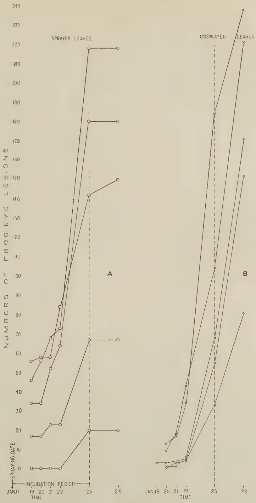
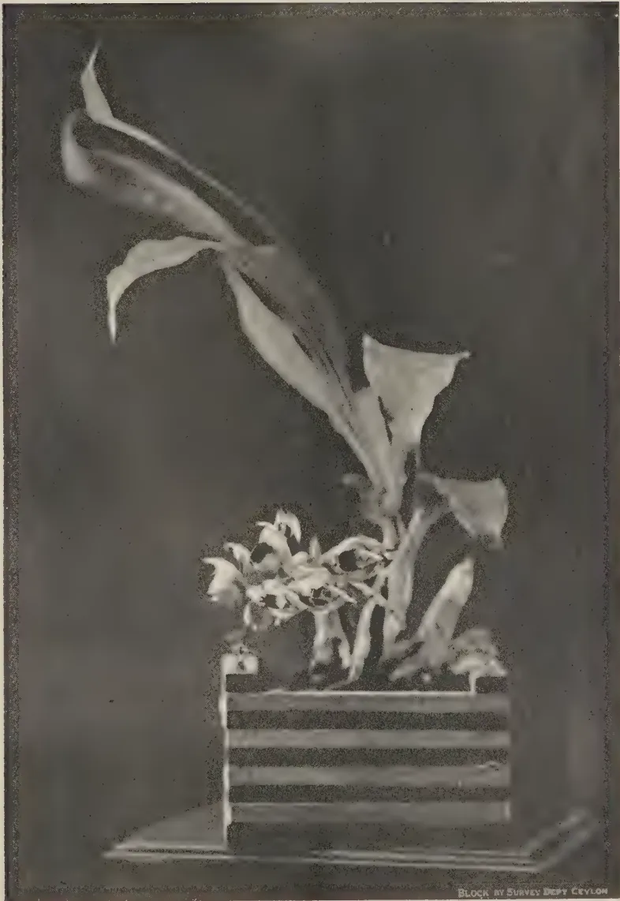

VOL. XCIII
PERADENIYA, OCTOBER, 1939
No. 4
| Page | |
|---|---|
| Editorial .. .. . | 193 |
| The Destructive Distillation of Coconut Shells. By Reginald Child, Ph.D. (Lond.), F.I.C. .. .. . | 195 |
| Losses Caused by Mineral Phosphates in Mixtures with Sulphate of Ammonia. By P. A. Keiller, F.I.C., F.C.S. .. .. . | 205 |
| A Note on the Loss of Ammonia from Fertilizer Mixtures. By Reginald Child, Ph.D. (Lond.), F.I.C.; T. Eden, D.Sc. (Manc.), A.I.C.; and M. L. M. Salgado, Ph.D. (Cantab.), B.Sc. (Lond.), Dip. Agric. (Cantab.) | 210 |
| A Convenient Method of Determining the Incubation Period of a Plant Pathogen in the Field. By M. Park, A.R.C.S., and M. Fernando, Ph.D. (Lond.), D.I.C. .. .. . | 213 |
| Catasetum macrocarpum Rich. By K. J. Alex Sylva, F.R.H.S. .. | 215 |
| Gums and Resins .. .. . | 217 |
| Calendar of Work for December .. .. . | 219 |
| Water Conditions of the Soil and Irrigation .. .. . | 223 |
| The Culture of the Papaw .. .. . | 230 |
| Report of the Proceedings of the Sixth Meeting of the Central Board of Agriculture .. .. . | 239 |
| Minutes of the Forty-Seventh Meeting of the Board of Management, Coconut Research Scheme .. .. . | 248 |
| Animal Disease Return for the Month ended September, 1939 .. | 252 |
| Meteorological Report for the Month ended September, 1939 .. | 253 |
1—J. N. 87496 (9/39)
A large, faint watermark of a classical building, likely a library or archive, is centered on the page. It features a triangular pediment supported by four columns, with a base and a small decorative element at the top of the pediment.Digitized by the Internet Archive
in 2025
https://archive.org/details/tropical-agriculturist_1939-10_93_4
The
Tropical Agriculturist
October, 1939
EDITORIAL
AGRICULTURAL PRODUCTS (REGULATION)
ORDINANCE
IN a brief summary of one year's cost accounts of two departmental seed paddy stations, we pointed out in the last number of The Tropical Agriculturist that the paddy farmer who works on a basis of payment for all services turns the corner of loss and profit at the price level of Re. 1.90 per bushel of paddy ex farm, or of Re. 1.50 per bushel if no allowance is made for the capital outlay in the acquisition of the land. In years when the failure of the water supply does not cause a major failure of crops, paddy is in fact purchaseable in the North Central Province and other similarly situated districts at 90 cents or Re. 1 per bushel. This price effectively excludes the capitalist and the man who has a choice of occupations from the rice-growing industry. The marketed paddy comes from two sources :
Landlordism may be regarded as a constant factor unresponsive to market fluctuations and other similar influences. With the possible exception of a slight increase in yield that may be secured by the utilization of the cattle manure that goes to waste in the jungle and on the road-side in some parts of the dry zone, the peasant now produces paddy to the limit of his capacity with the resources at his disposal. He can enlarge the area under cultivation and obtain a higher return from that area only by the use of implements and fertilizers which he cannot afford to buy. He will never be able to provide himself with these necessary adjuncts of agriculture by the sale of his surplus produce at Re. 1 a bushel. It follows that, if the country wishes to replace a substantial part of its imports with locally-grown rice, it must stabilize the price of paddy at a level which is high enough both to attract the capitalist to the industry and to enable the peasant to provide himself with some working capital by the sale of part of his produce.
The same considerations apply to other agricultural commodities of local consumption. At current market prices it is
194impossible to secure increased production. The question is often asked why the Ceylon peasant cannot produce foodstuffs for sale at the prices at which the Indian peasant places them on the Ceylon market. The basic fallacy underlying this question is the assumption that production is in itself a desirable end. On the contrary, consumption, or the maintenance of an adequate standard of living, is the object of all production, and it is more relevant to ask whether the Indian peasant producing for export at the prices ruling in Ceylon achieves a higher standard of living than his brother in Ceylon. Those who have lived or travelled in India give an unequivocal answer to this question in favour of the Ceylonese standard.
It has been recognized for some time by those who are interested in what may be called consumption agriculture, as opposed to export agriculture, that all schemes for food production must be based on an assured market at a level of prices which are in considerable advance of those that rule under competitive conditions. Therefore, the proclamation of the Agricultural Products (Regulation) Ordinance with effect from the first of this month constitutes a landmark of the first importance in the agricultural development of the country. The ordinance provides for the control of the imports of specified commodities by licences issued by the Executive Committee for Agriculture and Lands. A condition of the licence would be that the importer should take over a quota of the local produce at a prescribed price—the quota naturally varying from year to year according to the volume of anticipated local production. The intervention of the war at this juncture, and of the consequent measures for the control of trade, introduces some elements of difficulty to the introduction of the quota scheme. War-time control naturally has as its object the maintenance of prices at as near the level which ruled in the normal market before the war as possible. The object of the ordinance is to raise prices to a level which the producer would regard as adequate to remunerate him for his effort. It may be that in wartime the interests of the consumer are of paramount importance and that it is inexpedient to raise prices to a level which would be satisfactory to the producer. But it would be most unwise to compromise on this issue. At the beginning, prices must be almost in the nature of a bribe to a conservative peasantry and to shy capital. The difficulty of reconciling these conflicting interests is reduced by the fact that, during the first few years when the import quota is high, a very substantial increase of the price of the local product will only slightly increase the average price of the commodity which should form the basis of the control price. It follows from these considerations that very close co-operation must be maintained between the food control service and the Ministry of Agriculture.
195REGINALD CHILD, B.Sc., Ph.D. (Lond.), F.I.C.,
DIRECTOR OF RESEARCH, COCONUT RESEARCH SCHEME
WHEN wood and similar substances are heated in a closed space in the absence of air, they are decomposed with the formation of charcoal and volatile products. Coconut shells have a composition qualitatively similar to that of hard woods (Cf. Fleck, Van Beckum and Ritter, 1937; Child and Ramanathan, 1938).
In Ceylon, coconut shells are largely employed for the production of charcoal, export figures of this product since 1933 being as follows :—
| Year. | Amount. (tons.) |
Value. Rs. |
Value per ton. Rs. |
|||
|---|---|---|---|---|---|---|
| 1933 | .. | 2,019 | .. | 90,541 | .. | 44.85 |
| 1934 | .. | 6,234 | .. | 350,996 | .. | 56.30 |
| 1935 | .. | 7,667 | .. | 365,608 | .. | 47.68 |
| 1936 | .. | 6,751 | .. | 377,137 | .. | 55.86 |
| 1937 | .. | 13,455 | .. | 977,708 | .. | 72.66 |
| 1938 | .. | 10,997 | .. | 823,781 | .. | 74.91 |
This charcoal is produced by the time-honoured method of carbonizing the shells in pits and no attempt is made to recover by-products. Roughly 20,000 shells are required to produce a ton of charcoal; there is, in addition to the exports, a limited local consumption of charcoal for fuel, in gas engines, &c., so that it may be estimated that in 1937 and 1938, about 250 to 300 million shells each year were burned for charcoal.
Since the outbreak of war there has been experienced in Ceylon a shortage of acetic and formic acids for rubber coagulation, with inflated prices for these commodities. This may be only a temporary phase, but the question has been raised whether acetic acid could not be recovered from the by-product of coconut shell distillation.
It is the object of the present article to review what is known of the yields and composition of the products from the dry distillation of coconut shells, and thus to provide data upon which may be based consideration of their possible economic development.
196The primary products of distillation are charcoal, which remains in the retort or oven in which the shells are heated; pyroligneous liquor and settled tar, which distil over and are condensed in suitable water or air cooled condensers; and uncondensable gases.
The course of distillation is somewhat as follows: at the commencement of heating, the first action is to dry out the contained moisture of the shells (about 9–10 per cent.) and the first distillates are mostly condensed water; thereafter the main reactions set in with the formation of large quantities of gas and the liquid distillate contains acetic acid, methyl alcohol and some tar; the reaction becomes exothermic at about 290°C, i.e., continue without the necessity of external heat. When this stage is over, with continued external heating tarry matter predominates in the distillate.
Several studies on shells have been reported and Table I. shows the results recorded of the yields of the primary products. Literature references to the table will be found at the end of this article. Columns 6 and 7 refer to commercial trials carried out in 1934 respectively by Messrs. H and T. Danks (Netherton), Ltd., and by Messrs. Low Temperature Carbonisation, Ltd., on behalf of Messrs. Lee Hedges & Co., Colombo, and are included by courtesy of the latter firm.
Ramachandran (1938) has described experiments on the effect of adding certain chemicals to the shells before distillation, reporting that zinc and magnesium salts gave an increased yield of pyroligneous liquor, whilst aluminium salts reduce the yield of pyroligneous liquor but slightly increase the yield of settled tar. In view of the considerable variation of the results given by different observers, these statements probably need confirmation. It is possible that shells from different sources behave differently, but it is the writer's opinion that the main causes of variation are (i.) differences in the moisture content of the shells and (ii.) lack of standardization of distillation conditions. Thus the high charcoal figures and low liquor and tar percentages reported by Georgi and Buckley (column 4) probably point to insufficient heating; the low charcoal and high tar figures of the commercial trial by Messrs. Low Temperature Carbonisation, Ltd. (column 7) indicate thorough carbonisation; whilst the figures of the writer (column 5) are known to have been due to good heating of the retort but inefficient condensation of the distillate.
197In spite of this variation in the reported results, they are in sufficient accord to show what yields should be obtainable under good conditions of distillation and the general averages (excluding the extreme figures) work out approximately at :—
| Charcoal | .. | 34 lb. | } from 100 lb. of shells. |
| Pyroligneous acid | .. | 40 lb. | |
| Settled Tar | .. | 6 lb. | |
| Gas | .. | 20 lb. |
Acetic acid under good conditions should reach 12.5 per cent. in the pyroligneous liquor, or 5 per cent. of the weight of the shells. That is to say, since 250–300 million shells weigh about 36 to 45,000 tons, the equivalent of some 2,000 tons of glacial acetic acid is annually burnt off into the air in the manufacture of charcoal in Ceylon.
The annual requirements of the Ceylon rubber industry of acetic and formic acid together do not greatly exceed 500 tons.
The distillate separates into two layers, the top known as “pyroligneous liquor” and the latter as “settled tar”. The settled tar does not represent all the tarry substances present, parts of which remain in solution in the pyroligneous acid and are known as “dissolved tar”.
Pyroligneous Acid (the word “pyroligneous” simply indicates “derived from wood by a process of heat”), is by no means a simple chemical substance, but a complex mixture of a large number of compounds. The actual composition varies with conditions of distillation and with the raw material used. The principal constituent is, however, acetic acid, and “pyroligneous liquor” or “pyroligneous acid” may be regarded as an impure dilute acetic acid contaminated with other compounds. It is a dark, reddish-coloured liquid with a strong, smoky smell. As will be seen from the Table, the acetic acid content may vary between about 7 and about 15 per cent. but with dry shells and satisfactory distillation at least 10 per cent. should be obtained, and if the weaker first distillates be rejected, at least 12.5 per cent.
The other constituent of importance is “wood naphtha,” a mixture of methyl alcohol and acetone. The percentage has been reported as –3 per cent. in the liquor, or 1.1–1.2 per cent. on the original shells. (Wells, 1917; Sudborough, 1920).
Settled Tar.—The division of constituents into those present in pyroligneous liquor and in the settled tar is, of course, only
198approximate, since any of the main constituents of one may be found in small quantities in the other. The settled tar, for example, contains some acetic acid.
The tar is a very complex mixture. There is nothing like a complete analysis on record, and there is very much more variation between the tar from various sources than in the pyroligneous liquor. Thus coconut shell tar differs considerably in composition from (say) beech wood tar, and is dealt with later.
Charcoal contains the non-volatile products. It consists mainly of amorphous carbon, but retains adsorbed some of the volatile products of carbonization and also contains the inorganic (ash) constituents of the shells. A separate account of the subject of coconut shell charcoal will be given in a separate article and further details are accordingly not given here.
Gas.—The gas evolved contains mostly carbon dioxide and monoxide, but the actual composition will vary considerably with conditions of distillation. The only available report on the gas from coconut shells (column 7) gives the following details :—
Yield—5,144 cu. ft. per ton of shells (16·4 per cent.)
Calorific value—396 B.T.U./cu. ft.
Sp. gravity—0·9336.
Therms of gas per ton of shells carbonized—20·37.
Coconut shells compare very favourably with most woods as raw materials for distillation, particularly in two respects. The moisture content of air-dried shells is low (not more than 10 per cent.), and the yields of acetic acid are extremely good.
Treatment of Pyroligneous Acid.—In the wood distillation industry, pyroligneous acid is usually redistilled to separate it from dissolved tar. The distilled pyroligneous acid is neutralized with lime and partially distilled to recover the “wood naphtha,” the latter being then purified by suitable means. The neutralized solution remaining is evaporated to dryness leaving acetate of lime known commercially as “grey acetate.”
From “grey acetate”, acetic acid is obtained by treatment with sulphuric acid, and purified by suitable rectification.
The latter operations are matters of specialized technique, and it may be said at once that, in the writer’s opinion, it would not be practicable to undertake them in Ceylon.
199It should also be made clear at this point that it is not possible to concentrate acetic acid from dilute solutions such as pyroligneous acid by simple distillation. The boiling points of water () and of acetic acid () are fairly close together, and no constant boiling mixture are formed, as in the case of alcohol.
Numerous attempts have been made by industrial chemists for many years to concentrate acetic acid from pyroligneous acid without going through the intermediate stage of acetate of lime. Solvent extraction processes have been the most successful of these, of which, among others, are processes using ethyl ether (Brewster process), iso propyl ether (modified Brewster process) and wood oil (Suida process). A description of these is given by Partridge (1931).
All such processes involve specialized plant and technique. It may, therefore, be considered that the production of glacial acetic acid, or even 50 per cent. acetic acid, cannot possibly be contemplated in Ceylon at the present stage of development.
All that could be contemplated is the possible purification of pyroligneous acid to provide a reasonably pure dilute acetic acid of about 10–15 per cent. strength which would be suitable for rubber coagulation; and also, since lime is a local product, the production of a certain amount of “grey acetate.” Both of these are technically possible, since they involve fairly simple plant and do not require imported chemicals. The difficulties are not technical but economic.
The writer's experiments using a pyroligneous acid of 9.33 per cent. w/v acid content (as acetic) show that, by the addition of 30 per cent. by weight of crude salt to raise the boiling point, it is possible by simple distillation to effect considerable purification and some concentration. A number of runs showed that the first 5 per cent. approximately of the distillate contained most of the “wood naphtha”; the next 50 per cent. was a colourless distillate averaging 11.1 per cent. w/v acidity as acetic.
It is still, however, by no means pure dilute acetic acid. Besides acetic acid, the redistilled liquor contained some formic acid and dissolved phenols. The former amounted to 0.43 per cent. w/v and the latter (determined by chloroform extraction) to 2.36 per cent. w/v. Furfural was detected qualitatively. The presence of formic acid would not be a disadvantage in rubber coagulation, but coagulation and vulcanization tests on rubber prepared by the use of the material are necessary to ascertain whether phenols, furfural and other compounds have any deleterious effect.
200Further experiments are in progress to see whether better recovery is possible, and the Director, Rubber Research Scheme, has agreed to carry out the necessary test coagulations and vulcanizations.
Reference might be made here to the patent of E. C. R. Marks (1915) which claims "a process for coagulating latex characterized in this that the gases obtained by the destructive distillation of wood, in suitable retorts, or the like, after removal of the tar from the gases, are employed for treating the latex".
It would probably not be worth while in Ceylon attempting to recover methyl alcohol or even crude "wood naphtha". There is no local demand for the product, and the recovery is in any case more difficult in tropical than in temperate climates.
Grey Acetate.—In 1916 (Bull. Imp. Inst., loc. cit.), samples of grey acetate were prepared in Ceylon, and the Imperial Institute reported on them as follows:—
"It consisted of a coarse powder, pale grey in colour, and had a tarry odour. Its solution in water was of dark-brown colour.
On analysis the sample gave the following results:—
| Moisture | .. | .. | .. | 3.50 |
| Calcium acetate | .. | .. | .. | 83.60 |
| Sulphates expressed as calcium sulphate | .. | .. | .. | 0.60 |
| Carbonates expressed as calcium carbonate | .. | .. | .. | 0.08 |
| Total ash | .. | .. | .. | 32.20 |
| Matter insoluble in water | .. | .. | .. | 1.20 |
| Free lime | } | .. | .. | Nil |
| Calcium formate | ||||
| Sulphites |
This sample corresponds in quality with commercial 'grey acetate of lime', which usually contains 80 per cent. of acetate of lime. The amount of tarry matter is not excessive."
At that time grey acetate had increased in price from £8 per ton in July, 1914, to £38 a ton, and inquiries were received from the United Kingdom whether supplies were likely to be available for export from Ceylon. Grey acetate, as mentioned above, is used for the production of glacial acetic acid, and it is also a source of acetone, a solvent employed in the manufacture of cordite and for other purposes.
M. K. Narasimhan (1920) has reported a fairly comprehensive examination of the tar from coconut shells. Wells (1917) had previously given the results of distillation.
201A sample of 1,586 grammes examined by the writer gave the following boiling point figures on distillation :—
| Weight in grammes. |
Per cwt. | Per cwt. excluding (a) and losses. |
|
|---|---|---|---|
| B. Pt. up to 120° 268 gm. ) |
.. ( 187(a) | .. 11.8 | .. — |
| .. 61 | .. 3.8 | .. 4.4 | |
| 120°–200° .. | .. 312 | .. 19.7 | .. 22.5 |
| 200°–240° .. | .. 435 | .. 27.4 | .. 31.3 |
| 240°–260° .. | .. 95 | .. 6.0 | .. 6.8 |
| Residue .. | .. 485 | .. 30.6 | .. 34.9 |
| Experimental losses .. | .. 11 | .. 0.7 | .. — |
| 1,586 | 100.0 | 99.9 |
(a) was a aqueous layer containing 10.6 per cent. w/v acetic acid. These figures are in general agreement with those of Wells and of Narasimhan. Wells found that 60.5 per cent. distilled below 250°C; Narasimhan that 69 per cent. distilled below 260°C compared with 69.4 per cent. found by the writer. This percentage of volatile substance is high compared with most wood tars.
The writer confirmed the presence of 5 per cent. of phenol, which was identified as the benzoate m.p. 68°C; and also found that the guaiacol content (unlike that of beech wood tar) was very low.
Narasimhan (loc. cit.) described the residue after distilling off the substances volatile below 260° as a hard brittle pitch. The writer did not find this to be the case. Even after further distillation in vacuo at 0.04 mm., by which it was resolved to 20.4 per cent. of the original tar, the residue remained a viscous liquid, which did not harden when exposed to the air for eight months.
A crude shell oil (pol-katu tel) is used locally and in other coconut-growing countries as a rough and ready antiseptic. Its preparation using rudimentary apparatus is described by Kidavu and Nambiyar (1927). Compare also Wray (Perak Museum Notes, 1897, 2, p. 35).
Cooke (1936), in his bulletin on the Coconut Industry in the Philippines, states that “it is understood that when coconut shell is steam distilled an oil of medicinal use, having a commercial value in America, is obtained”. The writer (1936) was unable to obtain any such oil when finely-ground shells were steam distilled at ordinary pressure, and considers that the reference is possibly to steam distillation of shell tar.
The products from coconut shell tar would, in any case, repay further examination, particularly the creosote fraction.
202Table I.—Yields of Primary Products from Dry Distillation of Coconut Shells.
(Percentages by Weight).
| Bull. Imp. Inst. (1916) |
Wells. (1917) |
Sudborough. (1920) |
Georgi. (1929) |
C.R.S. (1934) |
Danks & Co. (1934) |
L.T.C., Ltd. (1934) |
Ramachandran. (1938) |
|
|---|---|---|---|---|---|---|---|---|
| Charcoal .. | 1. | 2. | 3. | 4. | 5. | 6. | 7. | 8. |
| Pyroligneous acid | .. | 32.5 | 38.3 | 49.0 | 30.0 | 40.6 | 29.2 | 37.2 |
| .. | 41.3 | 35.4 | 29.9* | 38.9 | .. | 41.3 | 39.4 | |
| .. | 3.2 | 37.5 | 41.0 | |||||
| Tar | .. | 6.9 | 6.3 | 2.9* | 4.6 | .. | 10.7 | 5.4 |
| Loss as Gas .. | .. | 16.2 | 20.0 | 18.2 | 26.5 | 21.9 | 16.4 | 18.0 |
| (measured) | ||||||||
| Acetic acid % in Pyroligneous acid |
.. | 8.12 | .. | 15.8 | 9.33 | .. | .. | 14.0 |
| Acetic Acid % on shells | .. | .. | 6.9 | 4.66 | 3.63 | .. | .. | 5.5 |
| Source of shells | ..(Ceylon) | (Philippine Islands) | (S. India) | (Malaya) | (Ceylon) | (Ceylon) | (Ceylon) | (Bangalore) |
| (Trivandrum) |
*Calculated from values given on basis of Sp. Gr. of pyroligneous acid 1.04 and tar 1.1.
Cf. Also A.I. de Leon and R. O. R. Reyes. "Utilization of some Agricultural Waste Products. I. Destructive Distillation of Coconut Shells, Coconut Husks, Coconut Rachises and Petioles and Rixe Hulls at 400°." Univ. Philippines Natural and Applied Sci. Bull., 1935, 4, 325-331.
203Both Wells (1917) and Sudborough (1920) discuss the economic possibilities in their respective countries, the former giving a comprehensive list of questions which are important factors in plans for a wood distillation industry.
The chief difficulty in any country is the collection at a central factory of sufficient shells for distillation. It seems clear that any plan to undertake shell distillation would only be possible in cases where there is already some centralization of nuts for copra or desiccated coconut manufacture with the exception that it might be possible to modify charcoal manufacture so as to recover crude pyroligneous acid which might be collected for re-distillation at a central place. There are in Ceylon copra manufacturers and desiccated coconut mills capable of handling as many as 15 million nuts a year. This number of shells—some 2,300 tons or about 7 tons per working day—would suffice to keep running a fair-sized installation, using a still of about 30' 6' diam. The shells in such factories are normally used for fuel directly, or burned to charcoal for use in gas engines.
Technically, as has been shown, coconut shells have definite advantages over most ordinary woods for distillation. A favourable feature in Ceylon is the existence of a considerable market for shell charcoal.
It is hoped that further information will accrue from semi-commercial trials projected by the Coconut Research Scheme. In the meantime, this article may be concluded by the writer's opinion that the development of any such industry as wood distillation would not be possible in Ceylon as an isolated project in normal times. It could only be considered in relation to other industrial development.
Interest only attaches to the subject at the present time in view of the possibility of it becoming necessary to meet war-time shortages or inflated prices of commodities essential to existing industries. It may be that no long-continued shortage of acetic acid or long period of high prices will occur, but it is obviously desirable to be prepared to meet such possible contingencies.
(i.) Destructive distillation of coconut shells may be expected to give per 100 lb. shells, 34 lb. charcoal, 40 lb. pyroligneous acid (of up to 12.5 per cent. acetic acid content), 6 lb. of tar and 20 lb. of gas.
(ii.) 250 to 300 million coconut shells or about 40,000 tons are burned annually in Ceylon to produce about 13,600 tons of charcoal, without attempts to recover by-products. These
204would amount to about 16,000 tons of pyroligneous acid (equivalent to 2,000 tons acetic acid) and 2,400 tons of tar. The local rubber industry's requirements of acetic and formic acids do not exceed 500 tons annually.
(iii.) The production of finished chemical products such as glacial acetic acid (99 per cent.) and methyl alcohol cannot be contemplated in Ceylon. The most that could be contemplated is the production of a purified pyroligneous acid for rubber coagulation, and possibly of grey acetate for export. These are believed to be technically possible.
(iv.) The chief difficulties relate to collection and transport of raw material, and the centralization of charcoal production. The chief advantages are the existence of a market for charcoal and, if of sufficiently good quality, for acetic acid, and the fact that shells, by reason of their low moisture content and high acetic acid yield, are particularly suited for distillation.
(v.) The tar contains carbolic acid and creosote. It may be possible to make some use of this locally, but further experimental work is needed.
L. C. Fleck, W. G. van Beckum and Geo. J. Ritter.—Composition of Coconut Shells. J. Amer. Chem. Soc., 1937, 59, 2279–2280.
Reginald Child and S. Ramanathan.—Composition of Coconut Shells. ibid., 1938, 60, 1506–1507.
The Distillation of Wood and other Vegetable Products. Bull. Imp. Inst., 1916, 14, 566–567.
A. H. Wells.—Destructive Distillation of Philippine Woods. Phil. J. Sci., 1917, 12A, 111–125.
J. J. Sudborough and H. E. Watson.—Wood Distillation. Part III. B. Miscellaneous Woods and Waste Products. J. Ind. Inst. Sci., 1920, 3, 285–292. Do. Part IV. with M. K. Narasimhan The Tar from Coconut Shells. ibid., 293–306.
C. D. V. Georgi and T. A. Buckley.—The Destructive Distillation of Coconut Shells and Oil Palm Nut Shells. Malayan Agric. J., 1929, 17, 398–402.
Coconut Research Scheme—Annual Report and Accounts for 1934. Ceylon Government Sessional Paper IV.—1935, page 4.
S. Ramachandran.—Influence of Added Chemicals on the Destructive Distillation of Coconut Shells. Current Science, 1938, 6, 504–505.
E. P. Partridge.—Acetic Acid and Cellulose Acetate in the United States. Ind. Eng. Chem., 1931, 23, 482–497.
E. C. R. Marks.—Improvement in the Process for Coagulating Latex. English Patent No. 11615, 1915.
M. Govinda Kidavu and E. K. Nambiyar.—A Note on Coconut Shell Oil. Madras Dept. Agric., Year Book, 1927, 33–35.
F. C. Cooke.—The Coconut Industry of the Philippine Islands. Dept. Agric. Straits Settlements and F.M.S. Bull. No. 23, 1936, p. 71.
Coconut Research Scheme—Annual Report and Accounts for 1936. Ceylon Government Sessional Paper X., 1937, p. 5.
205P. A. KEILLER, F.I.C., F.C.S,
ANALYST, COLOMBO COMMERCIAL CO., LTD.
IN the April issue of this journal there was published an account of the loss of ammonia from a fertilizer mixture in the course of storage during one month. A loss of 18.3 per cent. of the original nitrogen (5.69 per cent.) was recorded, and it was stated that after two months the mixture had become "a damp, sticky mass, resembling puddled clay". The mixture consisted of sulphate of ammonia, Saphos phosphate, and muriate of potash, and the loss was attributed to the interaction of the sulphate of ammonia and the mineral phosphate.
As the writer investigated this matter as far back as 1920, and found negligible losses, it seems of interest to give the results of that investigation, together with two others carried out since.
It is stated by the proprietors of Saphos and Ephos phosphates that these phosphates do not cause loss of ammonia from sulphate of ammonia, and Messrs. Tatlock and Thompson, Analysts, Glasgow, are quoted as having found no loss with Ephos phosphate under temperate climate conditions. As it seemed possible that this did not hold good under Ceylon conditions of high temperature and humidity, a laboratory trial was carried out with Ephos phosphate in August-September, 1920.
Two mixtures were used, No. 1 containing equal parts of Ephos phosphate and sulphate of ammonia, and No. 2 containing 3 parts of Ephos and 2 parts of sulphate of ammonia. From the point of view of this investigation, Ephos and Saphos phosphates are the same. They are different brands of the same mineral phosphate, differing only very slightly in their contents of carbonate of lime and phosphate of lime.
The conditions of this trial were made severe. The ingredients were thoroughly mixed and put through a coffee mill, ensuring finer grinding and more intimate contact of the ingredients than occurs with ordinary mixed fertilizers. The mixtures, weighing about half a pound each, were sampled and placed in open basins, exposing a large surface to the air.
206At the end of a week the contents of the basins were again thoroughly mixed, sampled by quartering, and the nitrogen and moisture determined. This was repeated at intervals for approximately 2 months. This mixing and sampling exposed fresh surfaces to the air and increased the liability to loss of ammonia.
The results of the nitrogen determinations are given in Table 1.
| No. 1 Mixture | No. 2 Mixture | |||
|---|---|---|---|---|
| Nitrogen Per Cent. |
Percentage Loss |
Nitrogen Per Cent. |
Percentage Loss |
|
| Mixed | 17.8.20 | 10.20 | — | — |
| After 8 days | 25.8.20 | 10.06 | 1.4 | 8.17 |
| „ 15 „ | 1.9.20 | 10.03 | 1.7 | 8.00 |
| „ 28 „ | 14.9.20 | 9.69 | 5.0 | 7.83 |
| „ 63 „ | 19.10.20 | 9.55 | 6.4 | 7.56 |
Table 1.—Loss of ammonia in open basins.
(All nitrogen percentages calculated to original moisture)
The mixtures remained in good condition throughout.
The losses are expressed in the above table as percentages of the total nitrogen at the start. This has been done for comparison with the figures recorded in the publication referred to, but actually the Fertilizer and Feeding Stuffs Regulations in the United Kingdom allow variations which are expressed as percentages of the whole bulk (italics theirs). According to these Regulations the lowest permissible limit for No. 1 mixture is 9.90 per cent., while for No. 2 it is 7.98 per cent. Under the conditions of this experiment this drop in nitrogen was evidently reached at some date between the second and fourth week after mixing.
In view of the unnaturally severe conditions of this trial and the fact that negligible losses were found after 15 days exposure, it was concluded that the losses in practice would be considerably less, and that such mixtures could safely be made.
In March this year another laboratory experiment was carried out on the same lines, with the addition of potash to both mixtures. As it had been stated that the danger of loss of ammonia would be avoided by the use of bone meal in place of Saphos phosphate, No. 2 mixture was made up in this way. The mixtures were as follows :—
| No. 1. | No. 2. | ||||
|---|---|---|---|---|---|
| Sulphate of Ammonia | .. | 2 | Sulphate of Ammonia | .. | 2 |
| Saphos Phosphate | .. | 4 | Bone Meal | .. | 4 |
| Muriate of Potash | .. | 4 | Muriate of Potash | .. | 4 |
| 10 | 10 | ||||
Two-pound lots of these mixtures were ground to pass through a 1 mm. sieve, sampled by quartering, then placed in large open beakers and left in an airy situation. Sampling was repeated at approximately weekly intervals, the contents of the beakers being turned out, thoroughly mixed, and sampled by quartering. This mixing and sampling accentuated the liability to loss.
Nitrogen was determined in each sample, with the following results. (Table 2).
| No. 1 Mixture (Saphos) |
No. 2 Mixture (Bone Meal) |
||||
|---|---|---|---|---|---|
| Nitrogen Per cent. |
Percentage Loss |
Nitrogen Per cent. |
Percentage Loss |
||
| Mixed | 8.3.39 | 4.35 | — | 5.97 | — |
| After 1 week | 13.3.39 | 4.37 | — | 5.95 | 0.3 |
| „ 2 weeks | 20.3.39 | 4.47 | — | 6.08 | — |
| „ 3 „ | 27.3.39 | 4.26 | 2.1 | 5.77 | 3.3 |
| „ 4 „ | 3.4.39 | 4.13 | 5.1 | 5.96 | 0.2 |
| „ 5 „ | 12.4.39 | 4.21 | 3.2 | 5.74 | 3.8 |
| „ 6 „ | 17.4.39 | 4.17 | 4.1 | 5.60 | 6.2 |
| „ 7 „ | 25.4.39 | 4.16 | 4.4 | 5.70 | 4.5 |
| „ 8 „ | 2.5.39 | 4.27 | 1.8 | 5.64 | 5.5 |
| „ 9 „ | 8.5.39 | 4.14 | 4.8 | 5.71 | 4.3 |
Table 2.—Losses of ammonia in open beakers.
(All nitrogen percentages calculated to original moisture.)
These losses are quite small. A variation of 0.5 per cent. of nitrogen is allowed under the United Kingdom Regulations in the case of No. 1 mixture, which means that the nitrogen may vary between 4.85 and 3.85 per cent. The above figures vary between 4.47 and 4.13 per cent. and are well within the limits. In the case of No. 2, a variation of 0.75 per cent. is allowed and the nitrogen figure may therefore be between 6.72 and 5.22 per cent., whereas all the figures lie between much narrower limits. It should be noted that the losses were not diminished by the use of bone meal in place of Saphos phosphate.
These mixtures became somewhat damp in their upper layers after 4 weeks, by which time the moisture had increased from between 2 and 4 per cent. to about 6 per cent. After that the moisture increased more rapidly, and at the end of the 9th week it amounted to 10.90 per cent. in No. 1 and 12.80 in No. 2. The mixtures were not unfit for use but were at this stage damp enough to make distribution a little troublesome.
208Although neither of these laboratory experiments indicated that Saphos or Ephos phosphate causes serious loss of ammonia, it was considered advisable, in view of the heavy loss reported in the previous note, to make a trial, under working conditions, of the mixture detailed there and also of a similar mixture used on tea. The following were therefore mixed at Hunupitiya Works in the usual way :—
| Coconut Mixture. | Tea Mixture. | ||||
|---|---|---|---|---|---|
| Sulphate of Ammonia | .. | 2 | Sulphate of Ammonia | .. | 190 |
| Saphos Phosphate | .. | 4 | Saphos Phosphate | .. | 100 |
| Muriate of Potash | .. | 2 | Muriate of Potash | .. | 30 |
| Castor Cake | .. | 30 | |||
| 8 | 350 | ||||
Two-ton lots of each mixture were made up, sampled as they came from the mixer, packed in 1 cwt. bags, and stacked under ordinary conditions of storage. The mixtures were further sampled at weekly intervals, 5 bags being taken at random, put through the mixing machine, and sampled by the usual quartering. This re-mixing and sampling increased the liability to loss compared with a pile of bags left undisturbed. The sampled bags were set aside until the whole had been sampled (8 weeks), they were then all put through the mixer once more and one final sample of the whole was drawn.
The nitrogen was determined in each sample immediately on receipt, with the results shown below. (Table 3).
| Coconut Mixture | Tea Mixture | ||||
|---|---|---|---|---|---|
| Nitrogen Per cent. | Percentage Loss | Nitrogen Per cent. | Percentage Loss | ||
| Mixed | 22.5.39 | 5.07 | — | 11.75 | — |
| After 1 week | 29.5.39 | 5.18 | — | 12.27 | — |
| „ 2 weeks | 5.6.39 | 5.21 | — | 11.48 | 2.3 |
| „ 3 „ | 12.6.39 | 5.18 | — | 11.95 | — |
| „ 4 „ | 19.6.39 | 5.16 | — | 11.61 | 1.2 |
| „ 5 „ | 26.6.39 | 5.18 | — | 11.68 | 0.6 |
| „ 6 „ | 3.7.39 | 5.03 | 0.8 | 11.71 | 0.3 |
| „ 7 „ | 10.7.39 | 5.15 | — | 11.68 | 0.6 |
| „ 8 „ | 17.7.39 | 5.20 | — | 11.27 | 4.1 |
| „ 9 „ | 24.7.39 | 5.11* | — | 11.68* | 0.6 |
Table 3.—Losses of ammonia from bags.
(All nitrogen percentages calculated to original moisture).
*Re-mixed samples.
The losses here are quite negligible. The tea mixture was a little difficult to sample owing to the presence of fragments of
209castor cake husk, and this accounts for the greater variation in the nitrogen figures which are, however, all well within the limits allowed.
All nitrogen determinations were done in duplicate and agreed well.
The moisture in both mixtures increased with the duration of the experiment, and the figures are given in Table 4. All determinations were done in duplicate.
| Coconut Mixture | Tea Mixture | ||
|---|---|---|---|
| Mixed | 22.5.39 | 2.60 | 2.39 |
| After 1 week | 2.96 | 2.60 | |
| „ 2 weeks | 3.84 | 3.45 | |
| „ 3 „ | 3.91 | 3.80 | |
| „ 4 „ | 3.98 | 3.67 | |
| „ 5 „ | 4.14 | 3.73 | |
| „ 6 „ | 4.31 | 4.17 | |
| „ 7 „ | 4.52 | 4.40 | |
| „ 8 „ | 5.12 | 5.05 | |
| „ 9 „ | 4.72* | 4.84* |
Table 4.—Moisture absorbed by mixtures in bags.
*Re-mixed samples.
The mixtures felt somewhat damp after about the 4th week, but at no time were they in anything approaching an unusable condition, even when the moisture was at its highest after the 8th week. The test was carried out from the 22nd of May to the 24th of July, a time of rainy weather and humid monsoon conditions, and the mixtures did not become lumpy at any time.
Three experiments are described showing the losses of ammonia found to occur when mixtures of sulphate of ammonia and mineral phosphates, or bone meal, are stored under varied conditions.
Storage in open vessels in the laboratory caused some loss after about 3 weeks in the first experiment, but very slight loss in the second.
Storage in bags in a shed caused only negligible losses over a period of 2 months.
No confirmation was found of the heavy losses previously reported in this journal, nor of the absorption of so much moisture as to render the mixtures wet and unfit for use.
No advantage appeared from the use of bone meal in place of Saphos phosphate.
210REGINALD CHILD, Ph.D. (Lond.),
DIRECTOR OF RESEARCH, COCONUT RESEARCH SCHEME,
CEYLON,
T. EDEN, D.Sc. (Manc.), A.I.C.,
AGRICULTURAL CHEMIST, TEA RESEARCH INSTITUTE OF
CEYLON
AND
M. L. M. SALGADO, Ph.D. (Cantab.), B.Sc. (Lond.), Dip. Agric. (Cantab.),
SOIL CHEMIST, COCONUT RESEARCH SCHEME, CEYLON.
IN The Tropical Agriculturist, Vol. XCII, No. 4, April, 1939, page 220, one of us (M. L. M. Salgado) reported nitrogen losses of a serious nature on storage of fertilizer mixtures containing saphos mineral phosphate, sulphate of ammonia and muriate of potash. This appeared to be contrary to a reference to the problem made previously in the Annual Report of the Tea Research Institute (Bulletin No. 12), 1934, page 17. As a result of consultation between the Coconut Research Scheme and the Tea Research Institute it was agreed that, in order to resolve the apparent difference in opinion, more detailed investigation of possible controlling factors was necessary.
A detailed joint investigation was therefore planned to examine the following points:—
We were able to obtain locally by the help of local fertilizer distributors adequate consignments of the following mineral phosphates, Saphos A, Saphos B (A and B representing two different shipments of the same mark), Gafsa, Ephos, and Egyptian. Sulphate of ammonia is marketed in two forms known as "granular" and "rice crystal" and we have compared duplicate mixtures containing these respectively.
211The mixtures upon which we have worked were in two series corresponding respectively to the types used on coconut and tea estates. The actual proportions of the various constituents were as follows :—
| Coconut. | Tea. | |||||||
|---|---|---|---|---|---|---|---|---|
| S/Amm. | Phosphate | Mur/ | Pot. | S/Amm. | Phosphate | Mur/ | Pot. | |
| Normal | .. 4 .. | 4 .. | 2 | .. 2 .. | 4 .. | 1 | ||
| High Potash | .. 4 .. | 4 .. | 4 | .. 2 .. | 4 .. | 2 | ||
All possible combinations of the quantities and types above-mentioned, eight in all, have been investigated in 25 lb. lots. In addition, with the courteous assistance of a commercial firm (which we cordially acknowledge), we have been able to examine the losses occurring in eight saphos mixtures (coconut series) under commercial conditions of mixing, bagging, and storage. The Tea Research Institute prepared, stored, and analysed the 40 samples of the tea series, and the Coconut Research Scheme similarly dealt with the 40 samples of the coconut series. The latter station dealt with the sampling of the commercial series, whilst as an additional check the Tea Research Institute duplicated the eight Saphos A samples of the coconut series. All samples were examined for moisture and nitrogen content initially, and after intervals of 9 and 30 days respectively. The commercial samples were in addition examined after 60 and 90 days, and the tea mixtures after 60 days. Methods of preparation, sampling and analysis were jointly standardized.
The preparation for publication of the considerable amount of data accumulated will of necessity take some time. We feel, however, that in view of the inquiries that have been received by the two stations since the original note was published (loc. cit.), an interim report is desirable, particularly since similar work in the same field by P. A. Keiller appears in this number of The Tropical Agriculturist. By the courtesy of Mr. Keiller we have been able to see a copy of his paper in advance of publication.
It may be said at once that we have found in no case losses comparable with those previously reported; and in fact such losses as we have observed are very similar in magnitude to those recorded by Mr. Keiller. As typical of the results obtained, the following example shows the average loss found on the eight saphos A laboratory samples of the coconut series :—
Nitrogen Contents of Stored Manure Mixtures.
| On mixing. | After 9 days |
After 30 days |
Total gain or loss. |
|
|---|---|---|---|---|
| Nitrogen content (per cent. on dry) .. |
7.47 | 7.50 | 7.30 | — 0.17 |
| Moisture content per cent. .. | 2.24 | 4.26 | 7.92 | + 5.68 |
Our observation that the commercial samples picked up much less moisture (per cent.) than the 25 lb. samples (an increase of 2.04 per cent. as against one of 5.68 per cent.) makes it highly probable that the greater loss of nitrogen from the smaller samples of 1 lb. weight used in the original investigation (loc. cit.) was due to the more rapid uptake of moisture from the very earliest stages.
It now seems clear that the previous findings reported in this journal were based on preliminary results obtained from samples which were too small for practical purposes. This may also apply to the Malayan work referred to previously.
The detailed results of our findings will be published in due course but we can state at this point that, in the light of this more comprehensive investigation, there is no reason to fear appreciable loss of nitrogen from manure mixtures containing mineral phosphate, sulphate of ammonia, and muriate of potash, stored under reasonable conditions.
213MALCOLM PARK, A.R.C.S.,
PLANT PATHOLOGIST
AND
M. FERNANDO, Ph.D., B.Sc., D.I.C.,
RESEARCH PROBATIONER IN PLANT PATHOLOGY
THE need for direct field studies of plant pathogens is becoming increasingly evident. Estimates made in the laboratory or in the greenhouse of the incubation period of a pathogen have often little relevance to the complex conditions obtaining in the field. Besides, it is often a difficult matter to satisfy Koch's postulates; inoculation, in many instances, may not "take". In the following note is given an account of a simple technique of estimating the incubation period of a pathogen in the field. The method was developed in connexion with the frog-eye disease of tobacco, but should find application to many of the diseases that are amenable to control by the use of protective fungicides. The continuous, natural deposition of appreciable quantities of inoculum on the host surface is an absolute sine qua non for the successful working of the method. The technique is best illustrated by citing the instance of a specific disease.
When a tobacco crop is approaching maturity, the density of frog-eye conidia within the crop attains, at least under Ceylon conditions, a very high value, and numerous leaves occur which, besides exhibiting macroscopically visible lesions, carry several latent infections. If a leaf of this type is left intact, the latent infections show up on the expiry of the complete incubation period, and the continuous deposition of conidia on the leaf surface, in the meanwhile, results in further infections. A record of the numbers of lesions on such a leaf plotted against time, exhibits an uninterrupted and, as a rule, continuously accelerated rise (Fig. 1B). If, on the other hand, a leaf of the type discussed above is sprayed with a protective fungicide, the appearance of the symptom picture of latent infections will not be affected, but conidia falling on the leaf
214subsequent to spraying will either be killed, or at least prevented from establishing infection. The symptom picture curve for a sprayed leaf will accordingly continue to ascend for a period not exceeding the incubation period of the fungus, and then suddenly flatten out and run parallel to the time axis (Fig. 1A). The interval between the date of spraying and the date of this change of direction of the symptom picture curve, provides an estimate of the incubation period. A protective fungicidal cover is rarely completely effective, partly as a result of poor adhesion and imperfect toxicity of the fungicide, and partly due to continued extension of the host surface; a few infections often continue to establish themselves even after spraying. The latter part of the symptom picture curve is hence, as a rule, not perfectly horizontal, and the change of direction may not be well-marked. In such instances, the symptom picture curves of sprayed and untreated leaves may be suitably juxtaposed, and the interval between the spraying date and the date of divergence of the two curves will provide an estimate of the incubation period.
Actual records of lesion numbers made at the Experiment Station, Ganewatta, during the maha season 1938-39, have been plotted in Fig. 1. Selected leaves were sprayed on January 17, 1939, and lesion counts of sprayed and untreated leaves were made during the period January 19-28. The incubation period of a frog-eye lesion as determined by these records is 5-8 days.
The selection of leaves with the appropriate degree of infection and of a suitable spraying date, is of importance. The leaves should at the time of spraying have attained their maximum extension and should exhibit a few lesions. The spray should be applied when the symptom picture curves are rising steeply. It should be noted that, if the infection curve of a disease is inherently sigmoid, the curves for intact leaves too will, if continued for a sufficient period, exhibit a natural flattening out.
Strictly comparable symptom picture curves for sprayed and untreated surfaces can be obtained by applying the protective fungicide to one half of a leaf, and leaving the other half exposed to infection.
[Faint page: no legible print of its own could be verified; text withheld (stage 4 review list)]

This image is a scan of a blank page. The paper has a light beige or cream-colored tint. There are a few very small, dark specks scattered across the surface, which appear to be scanning artifacts or dust particles. No text, lines, or other markings are present on the page. 215CATASETUM MACROCARPUM RICH.
K. J. ALEX SYLVA, F.R.H.S.,
SUPERINTENDENT OF PARKS. COLOMBO MUNICIPAL
COUNCIL.
CATASETUM macrocarpum Rich. belongs to a genus of both epiphytic and terrestrial orchids of which there are about 40 species all confined to the tropical parts of America.
This orchid with its green plaited membranous leaves and thick and succulent pseudo-bulbs resembles a Calanthe when not in bloom.
The flowers are remarkable for their peculiar distinctiveness and beauty of structure. The flowers are borne on an arching raceme from a leafscar at the base of a pseudo-bulb. The flowers before opening bear a striking resemblance to a small bunch of green fruits. The sepals and petals are of a firm leathery texture, converging to form a hood. The fleshy lip is deep orange and is pouch-like. The column is long and erect terminating in a point-like horn with a pair of long, deflected and slender outgrowths like tendrils in the middle.
Though the flower does not open out fully, it is as large as three inches in diameter. The convex sides of the sepals and petals are green and grade into a pinkish-yellow of fringe at the edge, while the concave sides are thickly mottled and striped with purplish brown.
Culture.—Catasetum is not at all a difficult subject for cultivation, the main requirements being plenty of light and moisture during growth with a view to developing the pseudo-bulbs to maturity.
The plant thrives either in wooden baskets or perforated earthen pots suspended from the roof. Though the plant was originally found growing on the ground in decaying vegetable matter, it has since been treated as an epiphyte and cultivated in a mixed compost of half-decayed leaves, chopped moss, bits of charcoal, bone and well-burnt brick. The bottom of the basket should be packed with a layer of moss or half-decayed leaves mixed with rough sand; and after setting the plant, the rest of the compost should be evenly placed round the plant, and the basket well shaken to ensure firm setting. The plant is then given a good soaking in water, and is placed in the shade
216with ample light. After the first watering the plant requires little moisture until the new growths appear. Care in watering is necessary till the plant has become established and when in active growth water should be copiously supplied, as fast as the compost dries.
The plant needs the maximum light under shelter during the season of growth. It shows a partiality for atmospheric moisture but overhead syringing will damp off the young shoots at the early stage. The safest method is to water the plant at the roots and to wet the environment. As soon as the leaves turn yellow after flowering, the water supply should be reduced, and when these have dropped, discontinued altogether for a few days.
If the pseudo-bulbs are plump, only an occasional watering will be required until the plant again shows signs of activity.

A black and white photograph of a plant, identified as Catasetum macrocarpum RICH, growing in a rectangular wooden box. The plant features several long, narrow, lanceolate leaves that curve upwards and outwards. At the base of the plant, there is a dense cluster of small, light-colored flowers. The wooden box is simple, with horizontal slats. In the bottom right corner of the photograph, the text "BLOCK BY SURVEY DEPT CEYLON" is visible.Catasetum macrocarpum RICH
This image is a scan of a blank page. The paper has a light beige or cream-colored tint. There are a few very small, dark specks scattered across the surface, which appear to be scanning artifacts or dust particles. No text, lines, or other markings are present on the page. 217DEPARTMENTAL NOTEGUMS AND RESINSJ. C. HAIGH, Ph.D., Botanist
THERE are in Ceylon numbers of trees which yield gums or resins, and while it is unlikely that an export trade in these products will ever be developed, nevertheless it is possible that some of them may be of use as local substitutes for products that are now imported. The following brief notes refer to trees that are all wild and of common occurrence, and apparently of sufficient promise to be worth investigation. It is not suggested that they should be planted, at least at first; the utilization of wild trees will suffice to indicate the possibilities of any of them as sources of marketable gums or resins.
1. Limonia acidissima Linn. (= Feronia elephantum Corr.)
Wood apple
S. Diwul
T. Vila, Vilatti, Mayaladikkuruntu.
A small tree which occurs very commonly throughout the dry regions. The trunk yields a gum which strongly resembles gum arabic, for which it may be used as a substitute. It should be suitable for local use as a mucilage. It is used medicinally in India, in place of gum arabic.
2. Lannea grandis Engl. (= Odina Wodier Roxb.)
S. Hik
T. Odi
A small tree which occurs commonly in both dry and wet low-country, but especially in the former. A gum runs from the stem which is used in India as size for whitewash and in calico printing.
3. Canarium zeylanicum Bl.
S. Dik-kekuna, Kekuna
T. Pakkilipal
Common in the low-country. Yields an abundance of a clean fragrant, gum-resin which is used for fumigation and is also burnt for light in houses mixed with sand. It resembles elemi, which is used medicinally for making ointments.
4. Dipterocarpus zeylanicus Thw.
S. Hora
A large tree occurring commonly in the moist low-country. Yields a semi-liquid gum-resin that may be of use for varnish and lacquer.
2185. Doona zeylanica Thw.S. Dun
T. Koongili maram
A large tree, common in moist regions between 1,000-4,000 feet. An excellent colourless dammar-like resin exudes from the trunk, and could be used as a substitute for dammar in varnishes.
6. Garcinia Cambogia Desrouss.S. Goraka
T. Koraiikkapuli
G. MorellaS. Kanagoraka, Goraka, Kokatiya.
T. Makki
Both species occur commonly up to 1,500 feet in the moist region. Both yield a gum-resin, that of G. Cambogia being useful as a varnish and that of G. Morella being the true Gamboge of commerce, used as a pigment.
7. Semecarpus Gardneri Thw.S. Badulla
A moderate sized tree occurring commonly in the moist low-country. The bark yields an almost-black resin which may form the basis of black varnish.
8. Vateria copallifera Retz. (= V. acuminata Hayne.)S. Hal
A large tree occurring commonly in wet districts up to 2,500 feet, especially near streams. The stem exudes an abundance of a clear yellowish resin equal to the best dammar.
9. Vatica chinensis Linn. (= V. Roxburghiana Bl.)S. Mendora
A moderate-sized tree rather common in the moist low-country, especially near streams. An abundance of a yellow transparent resin exudes from the stem, which should have a use similar to that from Vateria.
219T. H. PARSONS, F.L.S., F.R.H.S.,
CURATOR, ROYAL BOTANIC GARDENS, PERADENIYA
TAKING the country as a whole, December is a very favourable month for nearly all garden operations. It is a time when the more tender seedlings ("tender" here refers to such plants as are very delicate in the seedling stage but which usually strengthen rapidly afterwards) can be put out and the earlier plantings consolidated. Before planting, some care should be taken in soil preparations to see that the manure used is not too fresh. Only well-decomposed manure should be used and this is best done if broken up, or even sifted, and incorporated in the surface layer of the bed or border. Sifted leafmould too, if available, is a very helpful medium to encourage weakly-constituted seedlings to go ahead.
Up-country, conditions are generally moist and cool, with strong winds prevailing in certain areas. Support should, therefore, be given to such plants as are of rapid growth and to all young trees in exposed positions. Certain shrubs, such as Streptosolen, Heliotropium, suffer from the effects of frost, and from now onward, to the end of January, preparations should be made to afford cadjan or hessian cover during nights when a frost is anticipated. Damping-off of plants, still in the seedling stage, must still be guarded against, dustings with flowers of sulphur being the usual remedy.
Requests are frequently received for advice on the formation of rock gardens. This form of garden is more adapted to temperate and sub-temperate than to tropical regions.
Owing to our extreme conditions and paucity of tropical varieties of suitable plants, the same degree of perfection cannot be attained here as in temperate climates, nor can the features of a true rock garden be expected, but, nevertheless, quite an interesting garden design, on the lines of the rockery proper, can, with care and judicious selection, be secured. The first requirements are a fairly open site, preferably one with shade trees on the western side, a suitable type of rock or stone,
220a reliable water supply and good drainage. The rocks should be rough, bold, weather-worn and not too small. They should be placed in a manner similar to that in which they would lie in their natural state, being partly buried in the ground and not merely laid on the surface. They should be laid in irregular outline but following one general direction so as to resemble the natural strata.
Fair-sized pockets, sufficiently large to make a good show of any one type of plant, should be arranged for, the pockets being filled with good soil such as potting mixture, including well-decomposed leafmould and sand, the coarser material with bricks, &c., for drainage being placed in the bottom of the pocket. Soil of finer texture should be applied on the surface.
Much now depends on the selection of plants made, and for a rockery of the above description plants of dwarf and ever-green habit should be used together with succulents and bulbs. Useful varieties of dwarf habit for the foreground should include torenia, the small creeping variety of coleus (Coleus Rehneltianus) Ficus pumila, santolina, dwarf caladium (Caladiums Humboldtii) dianthus, achemenes, gerbera, petunia, portulacea, Phlox Drummondii, sedum, verbena, ophiopogon, the creeping balsam (Impatiens repens), alternanthera and candytuft. For filling the pockets, in the main, the following will be very suitable and attractive:—plumbago, turnera, angelonia, coreopsis, exacum, gynandropsis, variegated pine-apple, Salvia farinacea, Scutellaria (scarlet and blue), vinca, asystasia, kalanchoe, crossandra (all species) the small scarlet euphorbia (E. Bojeri) Russellia juncea and Sophora violacea among many others.
Another form of rockery which is becoming more popular in small gardens is the rockery-cum-fernery. This type of rockery is suited to those plants which thrive under shady conditions. Moisture and good drainage are essential in this type of garden, and also good shade for the greater part of the day. The idea is a reproduction, more or less, of the characters of a plant-covered bank so often seen along or near the roadside in jungle or forest areas. A few rocks inserted in a bank here and there as a basis, and around which, in prepared areas, are planted such shade-loving plants as can be accumulated, is the idea. The soil in such cases needs to be light and to consist chiefly of leafmould, sand and any mossy material available, with a dressing of good black garden soil. Chopped-up, dried roots of Gleichenia linearis, the Ceylon "Kekila" obtained from partially-drained boggy areas, are a useful acquisition for the fern representatives of such a rockery. In general, the condition under which such plants grow and flourish in their natural conditions should be reproduced as nearly as possible.
221To this end, the following selection of plants should be suited to (and thrive in) low-country and mid-country elevations :— begonia (Rex and others) isoloma, balsam, selaginella of several varieties, caladium varieties, the hardier varieties of anthurium and peperomia, Achmea fulgens, several species and varieties of dieffenbachia, calathea, costus, tradescantia (for edges), Strobilanthes dyerianus, Gynura bicolor, sansevieria, episcia, maranta, ophiopogon (for edges), philodendron, eucharis lilies, alpinia, fittonia (of creeping habit with handsome net-veined leaves, white, reddish and pink) and saintpaulia, the latter only for elevations above 1,500 feet.
Fern selections to accompany the above should include a single individual here and there of the only Ceylon low-country tree ferns Alsophila glabra and Hemitelia Walkerae with angiopteris and varieties of the maidenhair group, asplenium, blechnum, lomaria, nephrodium, polypodium and varieties of Pteris. Gymnogramme, commonly known as the “gold” and “silver” fern, does best in sunny positions and is almost the only fern so to adapt itself. Though ferns are not difficult to cultivate, they invariably feel the shock of transplanting and some time must elapse before they are able to establish themselves from such transplantings. Plenty of water to ensure a moist environment is the best means of reducing this period of recovery.
At this season of the year soil-nesting termites are extremely active. A very sound remedy to apply to all termite mounds observed to be in the process of formation is to close all outlets except one. Through this remaining opening, petrol should be poured by means of a funnel pipe or piece of small-sized bamboo section using about a quarter of a cigarette-tin-full of petrol to a small mound. This remaining opening should immediately be sealed up to prevent the escape of petrol vapour. The petrol vapour works through the termite channels and results in the destruction of the whole colony. At Peradeniya the gardens in past years suffered severely from such attacks, but this simple remedy has here proved entirely effective.
In this month vegetable cultivation calls for some attention. December is an ideal month for raising quick-maturing vegetables.
The best site for vegetable gardens is a flat open one, but any hilly site can be utilized if terraced. Shade from the hot afternoon sun is most advisable and in the selection of any new site this should be borne in mind. The ground should be well prepared by double digging, i.e., to a depth of approximately 16 in. to 18 in., and well-decomposed manure or any form of humus incorporated in the surface layer of 6 in. to 8 in. of soil.
222The double digging is for aeration purposes and it is not necessary that the manure should be buried too deeply.
Having brought the surface to a fine tilth, sowing can proceed, or if the seed has been already sown in boxes, transplanting can be undertaken. Separate articles are published by the Department of Agriculture, Peradeniya, giving details of planting distances, time of maturing and other particulars of a variety of crops but for purposes of this calendar the following selection might be grown for quick returns with advantage:—beans (French, cluster, Egyptian, lima, &c.), brinjals, carrots, chillies, cucumber, kohl-rabi (knol-khol), bandakka, maize, pumpkin, radish, shallots, spinach, sweet potato and tomato.
Of the above, bandakka and radish give the quickest returns. Village gardeners in the dry zone can make much of such varieties of food crops as cowpea, snake gourd, bitter gourd, luffa and melons in addition to some of those previously mentioned. Seed of most of the above is procurable from the local stores, market stalls and Colombo nurserymen whilst the Agricultural Instructors in the various ranges can also afford facilities for procuring such seed.
223THE water condition of the soil is a decisive factor in plant life : the moisture extracted by the plant from the soil forms the main component part of the body of the plant amounting to 90 per cent. of its total weight. Water and its component elements alike form essential parts of the organic compounds of the plant ; mineral nutrition can take place only with the active assistance of water, which also helps the process of synthesis, hydrolysis and general metabolism in the plant. Practical investigation of the problem of water supply to citrus trees in Arizona established the fact "that intelligent irrigation" was "of much greater importance than fertilizer practice" and that was "being found to be true in California."
The content of moisture in the soil, known as "soil moisture", is of great importance in the production of plants. A decrease of the amount of moisture in the soil beyond a certain limit arrests the growth of plants ; this characteristic explains the sterility of dry regions and arid lands. Excess moisture, too, hinders and sometimes even arrests growth. This is why artificial irrigation does not mean merely the supply of water to the soil, but should strive to reach a definite optimal content. The degree to which water is bound to the soil or is free to move there, is determined by the mutual attraction of soil and water particles, which can only be explained by the application of physical and chemical laws to these phenomena.
All phenomena of water retention in the soil, its movement inside the soil, and its flow downwards towards the earth, can be explained by the presence of two kinds of forces acting in the environment formed by soil and water : (a) the force of mutual attraction affecting particles of soil and water, (b) the force of gravity exercised by the earth, which affects the movement of water in a vertical direction from the soil to the subsoil and deeper.
Three types of moisture are distinguished in this connection : hygroscopic, capillary and gravitational moisture, though no definite transitional limits can be fixed between them (1 : 2). Hygroscopic moisture adheres very strongly to the particles of soil ; the pressure necessary to separate it from the particles of soil is fixed at 1,000 atmospheres. Hygroscopic moisture is situated on the surface of hard particles and is not capable to move about in liquid form. At a further increase of the moisture content, water does not come into direct contact with the hard substance of the soil, but with the layer
* By Professor F. Menchikowsky, in Hadar, May 1939, Vol. XII, No. 5.
2—J. N. 87496 (9/39)
224of hygroscopic moisture previously introduced into the soil. The mutual attraction of this additional water and the soil is weaker than that of the preceding supply, so that the new moisture can now move inside the soil in all directions, without yet being subject to the force of gravity exercised by the earth. This moisture, too, is retained by the soil, but a pressure of 5–15 atmospheres suffices to separate it from the soil. Since it is generally assumed that this moisture occupies the capillary spaces in the soil, and maintains itself there partly owing to capillary attraction, it is known as “capillary moisture”. Any further increase of moisture in the soil leads to the accumulation of water retained in the soil with difficulty; this water, therefore, drains down as a result of the terrestrial force of gravity. This water is known as gravitational moisture.
If soil comes into contact with a surface of sub-soil water at a certain depth, so that all soil capillaries are filled with water, we enter the domain of physical capillary phenomena. Water rises on its own in the capillary spaces of the soil and reaches a certain level, at which the weight of the rising column of water is counter-balanced by the action of intermolecular soil forces. Physical laws teach us that such capillary rise depends on the diameter of the capillaries in a reversed proportion, the narrower the opening the higher the rise. At the same time, observations prove that in these circumstances capillary moisture attains a maximal rise in loamy soil, a lower rise in sandy-loam, and a minimal rise in sandy soil.
Another feature of the capillary rise in these conditions is that the percentage of capillary moisture decreases with increased height. This circumstance, too, is in strict conformance with the laws of capillarity, and is an extremely important factor in the artificial and natural moistening of the soil.
However, several scholars draw a distinction between the upper and lower zones of capillary moisture (Keen, Versluys, Vageler).
The upper zone of capillary moisture is not completely full with water and the capillary attraction gives, therefore, place to the forces of physico-chemical adhesion.
This is the zone of “open” capillary moisture, the air spaces of which amount to about 24 per cent. of the total soil porosity, which is most favourable to plant life. The following are the types of moisture from soil surface downwards:
| Soil surface |
| hygroscopic moisture |
| ↓ |
| “open” capillary moisture |
| ↓ |
| “closed” capillary moisture |
| sub-soil water. |
As is well known, plants require an uninterrupted supply of water, without which they cannot exist. This supply is assured by the root system, which develops a certain sucking power, that grows as we proceed from the periphery to the centre of the root, and fluctuates between 1 and 10 atmospheres.
Comparing these data with the forces that retain the three above mentioned types of moisture in the soil, we find that the one corresponding to the suction power of the root is the capillary moisture (5–15 atmospheres). As the stock of capillary moisture in the soil decreases, the plant experiences growing difficulties in the extraction of moisture from the soil; the plant begins to wither, and as soon as the amount of moisture falls short of a certain limit, it perishes. At this critical moment the soil still has a certain stock of moisture, but the latter is inaccessible to the plant, since physiologically it forms the “dead moisture” store. This unavailable stock of moisture in the soil corresponds more or less to what we call hygroscopic moisture.
Gravitational moisture fills the non-capillary hollows of the soil, which spaces are as a rule filled with the air necessary for the breathing of roots. The presence of this type of moisture has a bad effect on the physiological conditions indispensable for the life of the roots; and consequently, gravitational moisture is considered detrimental as causing diseases, and sometimes even the death of plants. The following sketch illustrates the relation of the various types of moisture to the water requirements of the plants.
Moisture.
| Dry soil | hygroscopic | capillary | gravitational | Soil saturated with water |
| ↓ | ↓ | ↓ | ||
| unavailable | available | injurious | ||
| ↓ | ↓ | ↓ | ||
| too dry | optimal | too wet |
for plant growth
The above shows that a plant has definite requirements as far as moisture content in the soil is concerned. Under certain circumstances, which are optimal for plants, the latter attain maximum growth, while a different content of moisture in the soil brings about the death of plants. Two coefficients of soil moisture, which are biologically important, have been established in this connection. One of these is known as “permanent wilting point”; it designates a physiologically minimal content of moisture in the soil; as soon as this is reached, the plant withers and dies. The second coefficient denotes that moisture content of the soil, which brings about the optimal conditions of growth and development of the plant; it is known as the “optimal moisture content”. Successful practising of artificial irrigation requires the determination of these two coefficients for every type of soil. These coefficients of growth can be found with the help of the constants of soil moisture, which
226determine the capacity of the soil to retain moisture. Of the several known constants we shall discuss only two, acquaintance with which is indispensable for an elementary comprehension of conditions of soil. One of these is the "hygroscopic content". The determination of this constant aims to find out the amount of water in the soil, at which the latter becomes covered with a thin film of hygroscopic moisture. The second constant, which is very important in practice, is known as "capillary capacity"; it presents the amount of water required to fill a given volume of soil with capillary moisture.
As a result of the absorption of moisture by cultivated plants the amount of moisture in the soil decreases till the agriculturer must have recourse to irrigation. This critical moment, when the agriculturer must interfere, can be determined by noticing colour (dark-green colour in lucern) or the first symptoms of wilting (drooping leaves). However, a more rational method is to test the amount of moisture in the soil, the content of which should never be allowed to fall below the permanent wilting point. This point can be determined within given limits in every type of soil by means of the constants of soil moisture. It is impossible to discuss here at great length the complicated systems of determining the wilting point evolved by U. S. A. scholars (L. Brigg, H. Shantz, F. Veihmeyer, O. Israelsen and others). We shall only mention Bogdanoff's finding, that the amount of water unavailable to the plant as a "dead moisture" store is approximately double the quantity of hygroscopic moisture in air-dry soil.
This limit of the content of moisture in the soil, which forms a natural boundary beyond which no plant life is possible, closely depends on the mechanical composition of soils.
Coarse sandy soils continue to deliver moisture even when its content is reduced to 3 per cent. or less. In loamy soils this limit is reached at 20 per cent. In the loamy soils of our littoral zone the "dead moisture" store fluctuates, according to observations made by the author, between 20·2 per cent. and 21·0 per cent. This fluctuation of the amount of moisture unavailable to plants is of great importance to nature, for coarse soils with a small water capacity enable plants growing in them to utilize almost their whole stock of water.
Artificial irrigation as such forms an interference with the normal course of things in the soil under natural circumstances; it may, therefore, cause a change for better or for worse, as far as the plant is concerned. In irrigating the farmer introduces annually into the soil a considerable amount of mineral compounds in the shape of salts of Na, K, Ca, , &c. One part of these salts remain in solution thereby increasing the concentration of the soil solution, while another part is absorbed by the soil, as a result of which the physico-chemical properties of the soil undergo a change. It has already been mentioned that soil has a definite force of binding moisture; as the amount of moisture
227in the soil increases, this binding force decreases. The strength of these forces of adherence in the soil plays a very important role in the life of plants, for in the case of soils with a high capacity for binding moisture, sucking roots often experience difficulties and sometimes fail altogether to extract moisture from the soil. Soluble salts are subject to solvation, i.e. to become covered with an outer "rind" of water particles, thereby decreasing the available amount of moisture in the soil, which the plant is capable of assimilating. These phenomena have formed the subject of investigations made by several scholars. Their observations prove that one and the same amount of water in the soil may supply the plant with systematically decreasing quantities of available moisture, depending on the fact whether the soil had not been fertilized at all, normally fertilized or enriched by a high content of K-salts. In saline soils, or in such as have a tendency to accumulate soluble salts—as a result of climatic, topographical or soil conditions, mineral fertilization may become a factor that hinders growth or even arrests it altogether if intensive mineral fertilization is practised in the case of limited quantities of available moisture. In the agricultural practice of Palestine, where growth depends on rain precipitation, one can observe quite often that the first to suffer at a period of drought are those plots that have been abundantly supplied with chemical fertilizers.
The study of soil from the point of view of its saturation with various mineral bases, proved that physico-chemical properties, too, are conditioned to a large extent by the nature of the absorbed elements. The same is true also with regard to the degree, to which such soil binds moisture. The soil becomes covered with a "rind" of water particles, the formation of which depends on the absorbed elements, their quantity and form.
Consequently, mineral fertilization affects the balance of free moisture, available for assimilation by the plant, not only as a result of the change that takes place in the nutritive solution of the soil, but also as a result of the change that takes place in the soil itself, a change effected by the process of mineral fertilization.
It has already been stated above that the initial moment of irrigation is connected with the critical stage, at which the plant begins to experience difficulties in its biological activities as a result of the decreasing content of moisture in the soil. The supply of water to the soil at the time of irrigation aims to raise the content of water in the soil to a limit which would represent optimal conditions as far as the plants in question are concerned. Within the scheme of various types of moisture in the soil it means the formation of "capillary moisture". Maximum capillary moisture is known as "field capillary capacity". In practice capillary moisture can be determined in the field by ascertaining—after all gravitational moisture had run off—the percentage of moisture in a given plot protected from evaporation, in which underground water is situated at a considerable depth. (Under laboratory conditions this amount is approximately equal to the "moisture equivalent" i.e. the quantity of water, which Briggs and McLane found in a soil-sample after subjecting it to centrifuging for half an hour in a centrifugal machine, the centrifugal force of which is 1,000 times stronger than the force of gravity.)
228By filling the soil with water up to the above mentioned limit we create in the soil a store of water, which ensures the growth of the plant under optimal conditions during a certain period of time. In this condition some of the soil pores are filled with air. Strict care must be taken not to exceed this limit, since with the introduction of gravitational moisture, which lies beyond the limits of "capillary moisture" conditions become dangerous to the growth of plants.
On measuring the amount of moisture in the soil up to a certain depth (2ms), when maximum capillary capacity is achieved, and deducting the percentage of moisture in the soil at the initial moment of wilting, we find that store of water, which the soil may and must contain under normal conditions of irrigation.
Of course, the duration of the period, in which this store is exhausted by the soil, depends on the type of plants, their age, climatic conditions and the rate of evaporation on the surface of the soil (11).
The characteristics of the delivery of available capillary moisture to the plant are not less important than the total quantity of delivered moisture and the upper limit of this delivery. The fundamental factor that determines the character of the water economy in the soil, is probably that absorptive quality of the particles of the soil, which is determined by their chemical properties, and is known as sorption. This property to form more or less thick "rinds" of water particles round particles of soil is responsible not only for the total amount of all types of moisture in the soil and their distribution, but also for the process of water delivery to plants. The study of the latter shows that it is not uniform. At first the delivery of water is rapid, then it slows down, and finally, as the hygroscopic coefficient draws nearer, the delivery almost stops. The following scheme illustrates this process in various types of soil :
| loam | sandy-loam | sand | |
|---|---|---|---|
| hygroscopic and capillary moisture |
high | middle | low |
| water delivery | slow | middle | quick |
Surface evaporation was considered to be one of the factors effecting a decrease of the total store of moisture in the soil. This opinion rested on the assumption that capillary moisture filled all capillary spaces in the soil, and as soon as the upper layer of the soil was dried, the moisture stored in deeper strata ascended towards the surface. Had this assumption of the properties of capillary moisture been correct, the latter should have filled all hollows in the soil, without leaving any space at all, or only very little space, for air. Actually, a somewhat similar state of affairs is to be found only where the sub-soil water is close to the surface, when a type of "closed" capillary moisture is formed, as we have had occasion to notice above. Under normal
229conditions capillary ways are interrupted by air bubbles and the movement of moisture meets with difficulties. Observations made by F. J. Veihmeyer in California showed that loss of moisture by evaporation affected only 15 cm. of the surface layer of soil. Deeper strata do not lose any moisture as a consequence of this phenomenon. This assumption has been confirmed both in soil-tests in the laboratory as well as observations in the field. At the same time these observations showed that cultivation of the soil does not affect the conservation of moisture, contrary to former suppositions that mechanical cultivation destroys capillary connections in the soil.
The loss of moisture in uncultivated soil should be ascribed exclusively to the evaporating properties of weeds that cover the surface of such soils. Cultivation helps to decrease evaporation only in that sense that it destroys the cover of field-weeds.
Local climatic conditions render artificial irrigation indispensable, if a certain degree of soil-fertility is to be maintained. Consequently, it is necessary to take into consideration all factors affecting moisture in the various types of local soils. The usual system of irrigation does not always satisfy the requirements of plants, for it sometimes allows moisture to fall below the above mentioned critical limit, or else it enriches the soil with water far beyond the limits of capillary moisture. Citrus trees belong to that category of plants which are extremely sensitive to both deficiency and excess of moisture in the soil; a large number of diseases of citrus trees and seedlings is to be ascribed to either of these deviations from the standard. On determining the stock of optimally absorbable water, which corresponds to capillary moisture, and establishing the water requirement of the trees in the plantation, we can find out and fix the suitable interval of time between two consequent waterings. In the campaign against faulty irrigation one more factor plays a decisive role, namely the exact knowledge of the level of uppermost sub-soil waters, which may create a non-uniform distribution of moisture in the soil, more especially in deeper strata that lie near the level of these underground waters, where "open" capillary moisture turns into "closed" capillary moisture poor in air. Such unfavourable conditions prevail under local conditions in saturated plots lying in the vicinity of "wadis."
The problem of water delivery from the soil to the roots of plants has not been sufficiently considered as yet. It had been assumed that the flow of moisture to the roots was uniform, while in practice immediately after a watering the plant requires less efforts to obtain the requisite moisture than it does before a new watering. Another factor that is to be taken into consideration in this respect is the nature of chemical fertilization, for it affects the degree to which soil binds moisture or renders it available.
In the light of our present knowledge of soil moisture and its relation to plants, irrigation of plantations can be successfully achieved only if it is guided by a control of the interrelation of moisture and soil.
230THE papaya (Carica papaya, L.), or papaw as it is popularly called in South Africa, is indigenous to Tropical America, but its exact origin has not been determined. Related species grow wild in that country, and the papaw is believed to have originated from a cross between two of them. It is an important crop and is at present grown in practically all the sub-tropical and tropical countries of the world. As a health-food the papaw has few equals, and it should receive wider recognition in countries outside the tropics.
The papaw is a large herbaceous plant with a hollow and fibrous trunk. The leaves are usually seven-lobed, two or more feet across, and are borne on long leafstalks, so that the general appearance of the tree is somewhat palm-like.
The groves in South Africa are mostly composed of dioecious varieties (male and female flowers borne on separate plants) with a small percentage of monoecious types (male and female flowers borne on the same plant intermixed). With the exception of fruit and flower characteristics, these sex forms are identical in general appearance. The ordinary male and female plants are representative of the dioecious types.
Female.—The flowers are borne on short stalks, 1 to 3 inches in length, in the axils of the leaves, and are characterized by the absence of stamens. The fruit may be oval, pear-shaped or practically round.
Male.—The typical male or staminate tree produces its flowers in clusters on long pendulous flowering branches. Each flower usually has ten stamens and an abortive pistil. Under certain climatic conditions the pistil may on occasions develop normally and the male tree may bear a few fruits, which are usually cucumber-shaped.
Hermaphrodite.—The ordinary hermaphrodite tree is typical of the monoecious types, which may produce various combinations of male, female, and perfect flowers. (Perfect flowers are characterized by a well-developed pistil and stamens). Cucumber-shaped fruits are usually produced; but round, pear-shaped, or irregular fruits may occur in the same cluster with the first type.
The marked variation in the shape of the fruits on the same tree, and the low yield, are the chief objections against the growing of hermaphrodite trees on a commercial scale. The fruit of the female is fairly uniform and
* By Dr. J. D. J. Hofmeyr and J. C. le Roux, Horticulturists, Sub-tropical Horticultural Research Station, Nelspruit, in Farming in South Africa, Vol. XIV., No. 161, August, 1939.
231differs usually only in size, which characteristic, coupled with a good yield, makes the female the most desirable type to grow. It is dependent on the male, however, for the pollination of its flowers, such pollination is essential for the subsequent normal set and development of the fruit of the female tree. Since the fruit produced by the male may be regarded as inferior, the only necessary function of the male is to produce pollen for pollination purposes.
The papaw is a heat-loving plant and is very susceptible to frost. In South Africa it thrives best in a sub-tropical climate as exists mainly in the eastern Transvaal lowveld and Natal, but is also grown in certain frost-free areas of the eastern Cape Province. Though atmospheric heat is conducive to fruit development and quality, sunburn does much damage to fruit that is exposed as a result of leaf reduction through frost, wind or other adverse conditions.
Strong winds carrying sand and grit may injure the tender skins of immature fruits, causing the white milky juice (papain) to ooze through the injuries. Such damage renders the fruit unsightly and impairs its keeping qualities. It becomes necessary, therefore, to consider such factors as natural and artificial protection (windbreaks) against wind and frost when a site for planting papaws on a commercial scale is selected.
Under climatic conditions of high relative humidity and comparatively high atmospheric temperatures, papaws thrive but the fruits may not colour up sufficiently when reaching maturity and may remain pale green. Notwithstanding the excellent eating-quality of the ripe fruit, the lack of colour will affect the market price adversely. Experiments have shown, however, that colour may be improved by selection.
Since the papaw is cross-pollinated, the progeny is usually very variable, and therefore it is of the utmost importance for the grower to obtain his seed from a reliable source where selection has been in operation for a number of years. If such seed is not available, the grower must select seed only from the best trees, attention being paid to the following points :—Vigour of trees ; size and shape of fruit ; colour of ripe fruit ; thickness of flesh ; quality, yield and optimum spacing of the fruit on the stem so that the shape of the fruit is not affected by overcrowding. The crop produced as the result of the first selection will necessarily be variable, but if the grower persists with this selection program he will be rewarded by an increasingly greater uniformity of the crop after each successive generation. This procedure has already been practised by some growers with considerable success.
It should be mentioned here that the senior author has already made considerable progress in the breeding of desirable and true-breeding papaw varieties. Small quantities of seeds of these strains will probably be available for distribution to farmers after another two to three years of experimentation.
232Seedlings may be raised either in beds, in trays, or a combination of these two methods may be used.
Seed-beds.—A good bed should be prepared in the usual manner. The best time to sow the seed is from September to December. The beds are first watered thoroughly, and then shallow furrows, inch deep and 9 inches apart in which the seeds are sown to inch apart, are made across the bed. Cover the seeds lightly with soil, and water again. To prevent crust-formation, a thin layer of river-sand may be added and it is also advisable to shade the beds with grass or hessian. In order to control damping-off, which is a very troublesome disease when the plants are in the seedling stage, the beds should be well ventilated and not watered during the heat of the day. Some time after germination the seedlings are thinned out to allow a spacing of 2 to 3 inches between them in the row. If the surplus plants are lifted carefully they may be transplanted to an empty bed.
It is important to harden the plants before transplanting, by exposing them to the sun gradually and by watering them sparingly. The hardening-off process should start after the plants are approximately 4 inches in height. If the seedlings are inclined to become spindly, they may be topped a few inches above ground level. The seedlings are ready to be transplanted when they are 6 to 9 inches high. This stage is reached about months after the sowing of the seed. A few days before the seedlings are transplanted most of the leaves should be trimmed off. Irrigate the beds thoroughly shortly before transplanting in order to facilitate the lifting of the plants, which should then be taken out carefully and wrapped in wet sacking to minimize injury to the roots through exposure.
The disadvantage of this method is that unless climatic conditions are favourable the mortality of the transplants is usually comparatively high. A method which has been practised by a number of growers to lessen the mortality of transplants, and which has met with considerable success, is described in the following paragraph.
A tin can with the bottom removed, or a similar implement, is put around the seedling to be transplanted, and pushed downwards until the top of the can is level with the soil surface. The plant, together with the tin, is now lifted—there being no danger of disturbing the soil around the roots—and is then taken to the field. Here the tin is put in the required place and the plant together with the soil, is removed by exerting pressure on the soil in the tin. For an effective operation of this method it is necessary to have the plants well spaced in the bed.
Seed-trays.—Since papaw seedlings are especially susceptible to damping-off shortly after germination, the sowing of seed in trays is practicable only where this disease is not troublesome. It should be mentioned here that experiments have shown that conditions in trays are more favourable for the development of damping-off fungi than in beds. Where seedlings can be raised successfully in trays they may be transplanted at an earlier stage than those raised in beds. The result is a low mortality of transplants even under comparatively unfavourable conditions.
233Seed-beds and Seed-trays.—A method combining the advantages of the growing of seedlings both in beds and in trays eliminates most of the objections against either practice. Sow the seeds in beds in the usual manner, and transplant the seedlings to trays when they are about 3 inches in height. Most of the leaves should be removed on the previous day and the beds well watered to facilitate the lifting of the plants. A tray, the size of a halved paraffin tin, has sufficient room for 30 seedlings. Water well and shade the trays for about ten days until the seedlings have become established. They are then gradually exposed to the sun and the amount of watering is reduced for approximately ten days prior to transplanting. The seedlings are ready to be transplanted three weeks after they have been set in the trays. We have found that very few plants are lost when this method is employed.
Strong tins may be cheaply constructed from sheets of galvanized iron.
Though the papaw will grow fairly well on soils of low fertility, growers are warned against the tendency to produce this crop under such conditions. For the best results, a soil rich in plantfoods is necessary and if the soil is deficient in any plantfood constituent, suitable fertilizers should be added.
The soil should be well prepared by ploughing and discing to obtain the required friable condition. To facilitate irrigation, the layout should be such that the rows will be on the contour allowing a regular slope to 1 to 2 per cent. The planting holes, approximately 2 feet in diameter and 2 feet deep, should be spaced 10 feet on the square. About 1 to 2 months prior to planting, apply one bucket of well-rotted kraalmanure and lb. superphosphate to each hole, and mix well with the soil.
Since, on the average, about 50 per cent. of the seedlings are males, that is, unproductive trees, it is necessary to plant 3 to 4 seedlings, one foot apart, in each planting hole. Transplant only on cool and cloudy days or preferably in rainy weather. The planting holes should be watered shortly before and immediately after the setting out of the plants. If possible the transplanted seedlings should be protected against the sun by means of grass shelters, until they have become established.
As soon as the plants start to flower they are thinned out to one, and occasionally to two, per planting hole, in such a manner that there will be approximately one male to every 20 females in the final stand. This ratio of males to females is necessary to provide adequate pollination for normal fruit development. Under favourable conditions ripe fruit may be picked off a tree one year from the time of the sowing of the seed.
Established papaw plants are comparatively drought-resistant. However, to ensure high yields and sound fruit, and to protect the fruits against sunscald, good leafgrowths should be encouraged by judicious irrigation. Some
234growers believe that the quality of the fruit is impaired by irrigation during the winter months. This notion is, however, not supported by the results of our experiments and is apparently not well founded, when factors of low yield and sun-scald, as a result of reduced foliage due to lack of soil moisture, are taken into consideration. The frequency of irrigation during the dry period will depend on soil and climate and the size of the trees. In general, an irrigation every 2 to 3 weeks will be sufficient.
In our experiments, basin-irrigation has given excellent results. The basins are constructed around the trees and enlarged as the plants grow bigger, so that the whole root-zone area can be irrigated thoroughly.
The fertilizer program will depend on such factors as natural soil fertility, nature of previous fertilizer application, previous crops grown, and the condition of the plants. However, the following recommendations should serve as a general guide for fertilizer application.
As soon as the plants have become established, a light top-dressing of quickly-available nitrogenous fertilizer such as nitro-chalk, sodium nitrate or ammonium sulphate, should be given and its application repeated two months later. Under average conditions, an annual application of approximately 10 tons of kraalmanure and 700 to 800 lb. of superphosphate per morgen should keep the soil fertility at the required level.
During the summer months, a cover-crop such as sunn hemp can be grown between the rows. This will help to remove excessive soil moisture during the rainy season, will control weed-growth, and will maintain the organic matter and nitrogen content of the soil.
Root-cutting is harmful, and discing should therefore be resorted to instead of ploughing. Do not disc too deeply or too close to the trees when fertilizers or cover-crops are incorporated with the soil.
The harvesting season usually starts in April and may last until the end of December, with the peak during September and October. In cooler climates the initial ripening of the fruit may be delayed till spring, in which case the picking season may extend to January or February. Under favourable growing conditions brought about by factors such as judicious irrigation during the dry season (May to September), a high soil-fertility level, and other cultural practices, the plants may continue to flower and set fruit, and thus serve to prolong the marketing season, within limits. Yields may vary from 20 to over 150 fruits per tree, depending on climate and soil.
The stage at which papaws are to be picked will depend chiefly on the distance from the market and the season. Midwinter fruit should be picked at a much later stage than spring or summer fruit, because of the marked effect temperature has on the speeding-up or retarding of the ripening process subsequent to picking. Fruits picked too early do not develop the required flavour, texture and colour, whereas fruit picked at too mature a stage will lack keeping quality. The best guide is to pick at the latest stage possible for the fruit to reach the consumer in a sound condition.
235In order to reduce wastage, the fruit should be handled carefully during harvesting, transport and packing. The use of picking-gloves will minimize fruit injuries during picking, and will also protect the picker's hands against the milky juice of slightly immature fruits. Such juice, owing to its strong digestive action, may in the long run cause considerable discomfort. The picked fruit is placed in woodwool-lined lugboxes and carted to the packhouse to be graded and packed.
The number of fruits per standard papaw box measuring 18 in. by 12 in. by 6 in. varies from 4 to 7 (depending on size). Medium-sized fruit which allows the packing of 6 fruits per standard box is preferred. It is important that the fruits packed in the individual boxes should be at the same stage of maturity. Papaw boxes must be limed with woodwool, and the fruit packed firmly in woodwool with a thin layer of woodwool placed on top before the lid is put on. For sending to distant markets, it is preferable to wrap the individual fruits in ordinary large-sized fruit wrapping paper.
For marketing under the National Mark Scheme, the following regulations should be observed :—
Papaws must be graded as follows :—
1. (a) First Grade.—Papaws must be free from blemishes, injuries and bruises. Fruits packed in the same box must be at the same stage of ripeness, uniform in size and of one variety only. Fruits must not be too green or too ripe, and the flesh must be firm.
(b) Fruit must not vary more than 5 per cent. from the foregoing requirements in respect of condition and external appearance.
2. (a) Only new and clean boxes must be used.
(b) The boxes must be of the following external dimensions : length 18 in., width 12 in., depth optional.
3. (a) Papaws must be packed wrapped.
(b) Boxes must be packed to full capacity.
(c) Fruit showing signs of any disease must not be packed under the National Mark.
(d) The count must be clearly marked on the boxes.
Further particulars in this connexion may be obtained from the Bureau of Domestic Markets, P. O. Box 8,045, Johannesburg.
The milky juice which exudes from green fruit when the skin is lanced contains the ferment papain, which is considered to be a very valuable ingredient in medicine as a remedy for certain digestive troubles.
In the light of the unpublished investigations of H. van Elden of the Sub-tropical Horticultural Research Station, Nelspruit, and the experience of other workers, the procedure for the extraction and drying of papain may be briefly summarized as follows :—
Contrary to the general conception that non-metallic knives should be used when lancing the fruit for the extraction of the milky juice, it was found by van Elden and others, that special steel knives may be used without discolouring
236the latex. A steel-bladed knife has the advantage that a clean light incision can be made rapidly, without getting any of the green chlorophyll in the exuding juice.
The latex containing the papain is best obtained from full-grown, or nearly full-grown, well-developed green fruit by making 2 to 4 longitudinal incisions not more than in. deep. This operation may be repeated every 3 to 7 days. It has been found that better yields are obtained if only a few incisions are made at a time, the tapping being done over a long period until the fruit is covered with incisions approximately 1 cm. apart. The flow is most abundant in the early morning. Very young fruits give a latex that is rather weak in digestive power, while ripe fruits give very little, if any, milky juice. In South Africa we have a more or less definite period, from February to August, for tapping.
Only non-metallic containers, such as glass or porcelain dishes, should be used to collect the latex, because the juice acts on the metal and becomes discoloured. Coagulation soon begins and the mass adhering to the surface of the fruit must be carefully scraped off. Considerable time and labour would be saved if a convenient and efficient vessel could be devised which could be quickly put in place to receive the juice, permitting the operator to proceed to the next tree in the meantime.
The juice must be dried promptly after it is collected or decomposition, which destroys the value of the product, will occur. Sun-drying is practised to some extent, but it is much more satisfactory to dry the latex in a properly ventilated oven operated at 50 to 55° C.
One form of drier is about 3 feet broad, 3 feet deep, and 6 feet long. The sides and ends are made of brick, and openings are provided at both ends, one for the flue and the other to admit fuel. A foot from the top, which is open, a sheet of iron is placed, and upon this one or two inches of sand are laid to modify and distribute the heat arising from the fire beneath. The coagulated juice is spread upon brown linen stretched upon frames, which are made to fit the top of the drier. The temperature should not exceed 50 to 55° C., since great heat destroys the ferment. The dry and flaky material can be ground in a coffee-mill, preferably when the material is warm, and it should then be in the form of a light cream-coloured powder, this powder should be placed in bottles, which should be tightly sealed.
Little information is available as to yields. Amounts of papain extracted per plant vary considerably; 20 to 250 grams per tree, or from 60 to 350 lb. of dried latex powder per morgen may be produced. Coagulated latex produces 25 per cent. of its weight of dried powder. The latex is harvested through three seasons. By the fourth season the fruit is so high on the trunk that the cost of collecting the juice becomes prohibitive.
The price of the crude product is in the neighbourhood of 10s. per lb. It is a debatable point whether the production of papain in South Africa will be a paying proposition. Factors which will decide this favourably are cheap labour and high yields. The lancing operation, though it does not affect the quality of the ripe fruit, renders such fruit unsightly and hence unmarketable.
237Such fruit is valuable in processing, since quality only, and not outward appearance, is the chief consideration here. It is considered that the collection of papain may become a profitable sideline in this and other countries, provided that it can be produced in conjunction with the manufacture of other by-products such as canned fruit pulp, conserve, butter, chutney, jelly, &c.
According to Livingstone, the leaves, stems, roots and fruits of the papaw, can be put to fifty different uses of which only fifteen have so far been utilized. The fruit may be canned—as butter, chutney or jelly—be crushed for soda fountain use, or used as ice-cream flavouring or for syrups. The ripe fruit is frequently used in fruit salads or cooked as a vegetable. Rind and seed are processed for sale as a pickle relish. It is said that tough meat may be rendered tender by cooking it with green papaw fruit, or wrapping it in crushed papaw leaves. The fruit contains vitamins A, B, C and D which are vital for health.
The following recipes are given by Pope :—
Papaw Cocktail.—Cut papaw in dice or balls and serve in glasses with cocktail sauce and chipped ice. Or serve in the same manner with orange, lemon or lime juice, and a little sugar.
Papaw Whip.—To cups of papaw pulp, add juice of 1 lemon, cup sugar and beat into 2 stiffly-whipped whites of eggs.
Papaw Pickle.—Make syrup of 1 measure sugar and measure vinegar. Add a few whole cloves and peppercorns and 2 measures of half-ripe papaw cut into small pieces. Boil until tender.
Orange and Papaw Butter.—To 1 measure papaw allow measure oranges. Wash oranges well. Squeeze out seeds and juice. Put skins through a meat chopper and add to the juice, strained free from seeds. Add papaw pulp cut in small pieces (without rind) and boil all together ; then add as much sugar as pulp. Boil again for 15 to 20 minutes.
Baked Papaw.—Cut papaw in halves lengthwise. Add a little sugar and orange, lime or lemon juice, or a little cinnamon in place of the juice. Bake 20 minutes and serve immediately on taking from the oven. This is a vegetable.
Green Papaw Preserve.—Cut the fruit into slices. Peel and prick well on all sides. Cut into required sizes, put into lime water (1 tablespoon lime to 12 cups water) and leave overnight. Drain and place the fruit in a boiling syrup made of equal quantities of sugar and water. (Allow 1 lb. of sugar for every 1 lb. of fruit). Boil until the fruit is transparent and the syrup of the right consistency.
Green Papaw (Vegetable).—Papaw, as a vegetable, is not unlike vegetable marrow. The papaw must be very green, i.e., the flesh still quite white. Boil rapidly. When tender, strain, mash or leave in little cubes. Add butter and salt to taste.
Fortunately, the papaw has very few enemies. Insect pests are of minor importance and these will therefore not be mentioned here.
238There are only two papaw-diseases that are of any consequence in South Africa, and these are described below.
Foot-Rot Disease.—The general symptoms of this disease are the following :— A marked reduction in growth vigour of mature plants, resulting in a yellowing of the leaves and, in extreme cases, complete defoliation. Examination of the base of the trunk will reveal that rotting of the stem slightly above and below ground-level has started. According to Wager the disease, which is caused by a Pythium fungus, becomes evident when the plant is subjected to unfavourable growth conditions such as poor drainage and poor soil fertility. When these unfavourable factors are remedied, the disease may be easily controlled.
The Pythium fungus is sometimes very troublesome in seed beds where it may cause damping-off of the seedlings. To control damping-off, it is advisable to sow the seed in clean soil, if possible ; water only in the early morning or late in the afternoon, and provide good ventilation.
Stem Rot (Anthracnose).—The Plant Pathologist at the Sub-tropical Horticultural Research Station, Nelspruit, states that this disease appears in three stages on the papaw, viz., on the fruit, causing a rot in black round spots from to 3 inches in diameter ; on the petioles ; and on the trunk. Infected petioles will remain attached to the tree after maturity, whereas healthy ones will fall off. The fungus may gain entry into the stem through such infected petioles. The rotting of the stem due to anthracnose differs from that caused by Pythium (described above) in that the infection in the case of the former is usually well above ground-level, whereas in the latter case it is at or just under ground-level.
The following are control measures. Remove and burn infected petioles ; if the infection is bad the trunks may be sprayed with a 4-4-50 Bordeaux mixture ; in severe cases the infected portion is cut away and painted with Bordeaux paste, which is made by mixing Bordeaux powder with raw linseed oil.
Any further information relating to the culture of the papaw may be obtained from the Chief Horticulturist, Box 994, Pretoria. Those who desire advice in connexion with (1) diseases of the papaw, and (2) insect pests attacking papaws, should communicate with (1) the Principal Plant Pathologist, Box 994, Pretoria, and (2) the Chief Entomologist, Box 513, Pretoria, respectively.
239THE sixth meeting of the Central Board of Agriculture was held in the Board Room of the Department of Agriculture at 2.30 p.m. on Thursday, July 20, 1939.
Mr. E. Rodrigo, C.C.S. (Acting Director of Agriculture and Chairman of the Board) presided, and the following members were present :—Sir Wilfred de Soysa, Messrs. H. W. Amarasuriya, M.S.C., S. F. Amerasinghe (Sr.), S. Armstrong, C. Arulambalam, W. H. Attfield, A. C. Attygalle, N. J. Bannerman, R. H. Bassett (Commissioner for Development of Agricultural Marketing), A. Canagasingham, Dr. Reginald Child (Director, Coconut Research Scheme), Messrs. V. Coomaraswamy (Acting Conservator of Forests), M. Crawford (Deputy Director, Animal Husbandry, and Government Veterinary Surgeon), E. C. de Fonseca (Jr.), C. N. E. J. de Mel (Principal, Farm School), George E. de Silva, M.S.C., G. de Soyza (Acting Registrar of Co-operative Societies), L. Bandara Dharmakirti, James P. Fernando (Chairman, Low Country Products Association), James Forbes (Jr.), Dr. J. C. Haigh (Botanist), Mr. L. L. Hunter, Dr. J. C. Hutson (Entomologist), Dr. A. W. R. Joachim (Chemist), Messrs. A. L. Johnpulle (Acting Agricultural Officer, Plant Pests), R. C. Kannangara, M. S. C., S. M. K. B. Madukande Dissawe, T. H. E. Moonemalle, Mudaliyar S. Muttutamby, Dr. R. V. Norris (Director, Tea Research Institute of Ceylon), Mr. T. E. H. O'Brien (Director, Rubber Research Scheme), Dr. S. C. Paul, Messrs. Marcus S. Rockwood, B. M. Selwyn, Rolf Smerdon, R. H. Spencer-Schrader, S. G. Taylor (Acting Director of Irrigation), U. B. Unamboowe, Mudaliyar N. Wickramaratne, Rev. Father L. W. Wickramasinghe, Messrs. C. L. Wickremesinghe (Commissioner of Lands), C. Huntley Wilkinson, and Mr. Malcolm Park, Secretary.
The following visitors were present :—Messrs. Wace de Niese, J. P. A. D. Fernando, P. T. Jinendradasa, Dr. A. Nell, Messrs. W. M. Rogers, and G. V. Wickramasekera.
The following members intimated their inability to attend the meeting : Messrs. M. M. Ebrahim, Wilmot A. Perera, and A. A. Wickramasinghe.
The draft minutes of the fifth meeting of the Board, held on March 17, 1939, were amended and confirmed.
240The Chairman announced that Mr. W. H. Attfield had been nominated as the representative on the Board of the Ceylon Estates Proprietary Association in place of Colonel T. Y. Wright, resigned. He welcomed Mr. W. H. Attfield on behalf of the Board.
The Chairman intimated that Mr. C. Huntley Wilkinson would shortly be leaving Ceylon and expressed, on behalf of the Board, thanks to him for his able services as a member of the Board and of its Executive Committee.
The Chairman read a statement of the action that had been taken on motions passed at the fifth and earlier meetings of the Board.
The following is a summary of the statement :—
The Chairman stated that he wished to introduce a new feature at the meetings of the Board. He felt that the work carried out by the different Divisions of the Department of Agriculture was not sufficiently well-known and he proposed, with the approval of the Board, to ask the heads of the different Divisions to give from time to time at meetings of the Board an account of work in progress. The Board approving the suggestion, the Chairman called on Dr. J. C. Haigh to give a short account of the work in progress in the Botanical Division.
(Dr. Haigh's report is published separately in The Tropical Agriculturist).
Mr. Marcus Rockwood inquired whether experiments had been carried out with derris root. Dr. Haigh replied that earlier experiments had shown that derris grew satisfactorily, but that the roots of the varieties tested had a low rotenone-content. A further consignment of derris had been imported from Malaya but the plants were as yet insufficiently mature for root examination.
241The Chairman stated that the proposed amendments to the Irrigation Ordinance (Chapter 312 of the Revised (1938) Edition of the Legislative Enactments of Ceylon) had been referred to the Executive Committee for report. Copies of the report had been sent to all members. The Executive Committee had concluded that it was not possible to evolve a practicable method of protecting paddy fields and irrigation works ancillary thereto from damage by soil erosion without taking steps to prevent erosion on all land lying above such paddy fields and irrigation works. The Executive Committee felt that, as this was part of the major problem of soil conservation throughout the Island, it should be considered with the proposed Soil Conservation Ordinance.
The Chairman proposed from the Chair the following, based on the recommendations of the Executive Committee :—
“ That the Central Board of Agriculture do request the Hon. the Minister for Agriculture and Lands to arrange for the early framing of a comprehensive Soil Conservation Ordinance and for the inclusion in that ordinance of the protection of paddy land from silting. ”
The proposal was carried unanimously.
The Chairman stated that the following resolution, proposed by Mudaliyar N. Wickramaratne at the fourth meeting of the Board, held in November, 1938, had been referred to the Executive Committee for the formulation of a scheme :—
“ In view of the restriction now placed on the extension of tea and rubber planting industries, the absence of satisfactory prospects in the coconut planting industry and the general overcrowding of the learned professions in the Island it is the opinion of this Board that the Department of Agriculture should formulate and publish a scheme, or schemes, of farming as a career, for the information of the many young men who pass from our schools each year. ”
The Executive Committee had obtained from Mudaliyar N. Wickramaratne a memorandum on the subject. The Committee had considered this memorandum and had obtained from the Director of Agriculture relevant figures regarding the cost of clearing and opening land. Copies of the report of the Executive Committee had been sent to all members of the Board. It would be seen that the Executive Committee had reported that, on the basis of the detailed estimates prepared by the Department of Agriculture, the capital expenditure for the establishment of farms for educated young men would be so great that no scheme could be suggested by the Executive Committee which would not involve the prohibitive use of State funds.
The Chairman suggested that the Board might discuss the original motion again in the light of the suggestions made in the report of the Executive Committee or, alternatively, some member might move the adoption of the Executive Committee's report.
242A general discussion followed in which members pointed out that they were not in a position to come to a decision on the matter without first seeing the memorandum submitted by Mudaliyar Wickramaratne and the estimates for the cost of clearing and opening land made by the Department of Agriculture.
Mr. C. Arulambalam proposed and Mr. S. Armstrong seconded that the matter be deferred for further discussion until the next meeting and that copies of the memorandum prepared by Mudaliyar Wickramaratne and of the estimates of expenditure prepared by the Department of Agriculture be sent to all members for consideration before that meeting.
The Board agreed to this proposal.
The Chairman stated that the following resolution, proposed at the fourth meeting of the Board, held in November, 1938, had been referred to the Executive Committee for report :—
“ That, with a view to supplementing the supply of food for labourers on estates in the event of food control being enforced, Government be requested to lease land—forest and stream reserves excepted—suitable for the growth of all kinds of indigenous foodstuffs, including vegetables, where available in the vicinity of estates.”
Copies of the report of the Executive Committee had been sent to all members.
Mr. C. Huntley Wilkinson moved and Mr. Rolf Smerdon seconded the adoption of the report.
Mr. C. L. Wickremesinghe, Commissioner of Lands, stated that he had been unable to attend a meeting of the Executive Committee at which this matter had been considered. He pointed out certain difficulties that would arise if the report were accepted as it stood and suggested that the matter be referred back to the Executive Committee and that the Committee might give him the opportunity of helping them to submit more practical recommendations.
Mr. R. C. Kannangara supported this suggestion and, after further discussion, the Board agreed that the matter be referred back to the Executive Committee.
The Chairman stated that the following proposal of Mr. C. Arulambalam made at the fifth meeting had been deferred to enable the Board to consider a report from the Plant Pathologist on the subject :—
“ That as the Bunchy-top disease of the plantain is prevalent in all parts of the Jaffna District and as it is the cause of serious loss to the cultivators of that crop, which is one of the staple money crops next to tobacco of the Jaffna cultivator, and as it is beyond the means or the capacity of the average cultivator to eradicate the disease, the Central Board of Agriculture recommends to the Executive Committee of Agriculture and Lands to have the
243necessary steps taken without delay, by providing the Agricultural Department with adequate funds and staff, to enable it to carry out the work of eradicating the disease from the District through planned and co-ordinated action."
The Chairman stated that copies of the report of the Plant Pathologist and of his own comments thereon had been sent to all members. In view of the fact that, although the motion had been proposed and seconded at the last meeting, the submission of these memoranda might affect the proposal, he felt that Mr. Arulambalam should be allowed to amplify the observations he made at the last meeting.
Mr. C. Arulambalam stated that it would appear from the memorandum of the Plant Pathologist that the complete eradication of the disease would take many years and would be very expensive. He felt that, if the Board considered that the cost of eradication was too high, it would be necessary for the Department of Agriculture to assist the plantain industry in controlling the disease aided, if necessary, by legislation. He asked for the views of the Board on the matter.
Mr. R. C. Kannangara stated that information regarding the cost of eradication in the Hambantota area was not available. He felt that the exact cost of eradication should be obtained in different centres, and that the policy adopted should be based on the results of experiments carried out for a number of years.
Mr. Marcus S. Rockwood inquired whether it was not true that the disease occurred in the West Indies and that it had been eradicated there. The Plant Pathologist replied that there had been no record of the occurrence of the disease in the West Indies.
Several members spoke of the importance of the disease and pointed out the necessity of taking steps to control it.
Mr. C. Huntley Wilkinson suggested that the campaign in Jaffna should be continued. If control measures were successful there, they could then be extended to other parts of the Island.
Mr. R. C. Kannangara moved the following amendment :
"That this Board do recommend that experiments for the eradication of bunchy-top disease of plantains should be conducted on ten-acre blocks in the Northern, Central, Western, Southern and North-Western Provinces."
Mr. S. F. Amerasinghe (Sr.) seconded the amendment.
The Chairman stated that he felt that sufficient information regarding the control of the disease was already available. The main question which should be considered was that of cost. The expenditure involved in conducting an eradication campaign throughout the Island for about ten years would be enormous.
The amendment was put to the meeting and lost.
Mr. Arulambalam, in conclusion, stated that in view of the high cost he wished with the approval of the Board to withdraw his proposal. He recommended
244the adoption of the suggestion that the control of disease should be encouraged by propaganda and by bringing to the notice of cultivators the importance and value of the control measures advocated.
The motion was therefore withdrawn. The Chairman undertook to adopt Mr. Arulambalam's suggestion.
Mudaliyar N. Wickramaratne moved :—
“ That it is the opinion of this Board that Government should take steps to purchase local paddy for the purpose of reserving the same for use in case of any national emergency.”
Speaking to his motion, Mudaliyar Wickramaratne said that it was very desirable that the cultivation of paddy in Ceylon should be extended. He understood that a stock of rice was to be purchased by Government for use in a national emergency. He felt that, if paddy were purchased locally at an economic rate, paddy cultivation would be encouraged.
Mr. A. C. Attygalle seconded the resolution.
A discussion followed in which it was pointed out that supplies of paddy could not be purchased without the possibility of causing a shortage of domestic paddy, as crops had failed in certain districts. In the circumstances it would be unlikely that sufficient paddy could be purchased locally to ensure an adequate reserve supply.
The motion was put to the meeting and carried.
Mudaliyar N. Wickramaratne moved :—
“ That in the opinion of this Board the working of the Government rice mills should be handed over to an existing Ceylonese Company or to a Ceylonese company created for that purpose controlled and subsidized by the Ceylon Government.”
Speaking to his motion, Mudaliyar Wickramaratne stated that he understood that the rice mills at Anuradhapura and those now being erected by Government in other parts of the Island were to be handed over to a foreign company. He thought that this was not in the best interests of the paddy industry in Ceylon.
Mr. S. Armstrong seconded the resolution.
Mr. R. C. Kannangara stated that Mudaliyar Wickramaratne's proposal was based on false information. There was no truth in the statement that Government was going to hand over the mills to a foreign company.
Mr. H. W. Amarasuriya felt that the motion was premature. He moved as an amendment :
“ That, in the event of Government handing over the rice mills, it is the opinion of this Board that the mills should be handed over to an existing Ceylonese company or to a Ceylonese company created for that purpose controlled and subsidized by the Ceylon Government.”
245Mr. Kannangara seconded the amendment.
Mudaliyar Wickramaratne stated that he was prepared to accept the amendment.
The Chairman said that he felt that it was not proper for the Board to discuss, or advise the Government on a matter of public policy the object of which, however desirable in itself, is not the increased and improved production of agricultural goods. If the Board decided to support the proposal or the amendment this support would be given only if it was felt that by passing the resolution they were going to promote an increase in paddy cultivation.
The proposal as amended was put to the meeting and lost.
Mr. C. Arulambalam moved :
“ That the Central Board of Agriculture recommends to the Department of Agriculture to publish, for sale at a moderate price, a series of handbooks in English and the vernaculars (Sinhalese and Tamil), written in simple language and setting out all the scientific information that can be known about the growing of different agricultural products, the information to be based both (a) on the experiments conducted by the Department in every one of its own Experiment and Demonstration Stations in the Island and (b) on the study, by Departmental Officers, of the methods and results of cultivation by private agriculturists throughout the Island, each publication to deal with one product only, the object of such publications being the encouragement of the scientific cultivation on up-to-date lines of the products in every part of the Island suitable for its cultivation.”
In speaking to his motion, Mr. C. Arulambalam stressed the need for handbooks written in simple language for the guidance of cultivators.
Mr. S. Armstrong seconded the motion and said that existing journals like The Tropical Agriculturist and the two vernacular journals had a limited circulation and books were required which would reach every farmer.
The Chairman said that, as Director of Agriculture, he would willingly accept the resolution but he pointed out that the information available on certain crops was insufficient for a handbook. In such cases he presumed that other suitable publications might replace the handbooks.
Other members spoke in support of the resolution.
Mr. James P. Fernando asked that books on animal husbandry should be included and suggested that it was important that the language used should be as simple as possible.
The motion was put to the meeting and carried unanimously.
Mr. C. Arulambalam moved :
“ The Central Board of Agriculture recommends to the Department of Agriculture that an early investigation be made into the causes which have led to the decline and threatened extinction of the vine-growing industry
246in the Jaffna District, with a view to the resuscitation and possible expansion of that industry, which has been, for a long time, one of the minor agricultural industries in the District."
Mr. Arulambalam stated that he had little to add to what he said in his memorandum on the subject. The industry was declining and he felt that it was important that a competent authority should investigate the cause of this decline.
Mr. R. H. Bassett seconded the resolution.
Mudaliyar Wickramaratne asked that the investigation be extended to Kalpitiya where the same conditions prevailed.
The Chairman said that he would accept the resolution and would submit a report in due course.
Mr. S. B. Madukande moved :
"That, in view of the large number of illicit sales and thefts of cattle now occurring consequent on the abolition of the Cattle Voucher system, this Board recommends to Government the early introduction of the old system of executing vouchers by headmen for all cattle transferred or sold and of preparing cattle lists annually for purposes of identification."
Mr. Madukande, in speaking to his motion, pointed out that the abolition of a cattle-voucher system had led to an increase in the number of cattle thefts. He understood that it was proposed to introduce a modified system of licensing. This, however, might take a long time and he felt that immediate action was necessary.
Mr. S. Armstrong seconded the proposal and stated that the necessary machinery for the re-introduction of the cattle-voucher system was available. He felt that the old system should be revived until the new regulations came into operation.
Mr. M. Crawford, Deputy Director, Animal Husbandry, and Government Veterinary Surgeon, said that the cattle-voucher system was abolished in 1936 in order to discourage unnecessary branding and to permit of free buying and selling of cattle. There had been an increase in the number of cases of cattle theft since that time and it was generally accepted that this increase was associated with the revoking of the regulations. There had, however, been a general increase in crime of all sorts in Ceylon during the same period. The Minister for Agriculture and Lands had under consideration the question of introducing modified regulations to check cattle-thefts. With the proposed new regulations registration of cattle would be optional and other undesirable features of the old regulations would be omitted. He suggested that, in the circumstances, Mr. Madukande might withdraw his motion until he saw if the new regulations were effective.
A general discussion followed at the conclusion of which the Chairman asked Mr. Madukande if he wished to withdraw his motion. Mr. Madukande desired that his motion should be put to the meeting.
This was done and the motion was lost.
247Mr. Rolf Smerdon asked the Board for permission to withdraw this item from the agenda.
Permission was granted.
Mr. Rolf Smerdon stated that this subject had been placed on the agenda at the request of the Planters' Association of Ceylon. He wished to draw the attention of the Board again to the serious situation prevailing in coconut growing districts on account of the number of dead palms, standing or fallen, which provided breeding places for the coconut black beetle and the concomitant pest, the red weevil.
Mr. Smerdon stated that the situation became serious in 1936 but at that time it was felt that the enforcement of the regulations would impose undue hardships on the villager and small-holder. In consequence, it was decided that a policy of education and persuasion should be tried. At the beginning the policy had met with some success. The situation had, however, deteriorated and at present there were large numbers of dead palms standing or felled or in use as fence posts. He felt that since growers had failed to take advantage of the policy of education and persuasion the time had come for corrective treatment. He therefore moved :
“ That owing to the prevalence of the Black Beetle and Red Weevil pests of the coconut palm, especially in the Kurunegala District, this Board considers that the Regulations regarding this pest, proclaimed under the Plant Protection Ordinance, Chapter 307 of the Revised Edition (1938) of Legislative Enactments of Ceylon, should be strictly enforced.”
Continuing Mr. Smerdon suggested that the enforcement of the regulations should be proclaimed with the beat of tom-tom in every village and hamlet and that a short time afterwards prosecutions should be started. He felt that prosecution should be entered first against the owners of large estates and that the prosecutions should work downwards progressively. If this were done and if sufficient publicity given to the prosecutions, by the time the village was reached it would be necessary to search diligently to find any cause for action.
Mr. C. Huntley Wilkinson seconded the resolution.
The motion was put to the meeting and carried.
The meeting terminated at 5.35 P.M.
MALCOLM PARK,
Secretary, Central Board of Agriculture.
Peradeniya, August 21, 1939.
248MINUTES OF THE FORTY-SEVENTH MEETING OF THE
BOARD OF MANAGEMENT, COCONUT RESEARCH
SCHEME, HELD IN ROOM NO. 202, NEW
SECRETARIAT, COLOMBO, ON FRIDAY,
SEPTEMBER 15, 1939, AT 10 A.M.
Mr. E. Rodrigo, C.C.S., Acting Director of Agriculture (in the Chair); Mr. C. H. Collins, C.C.S. (Treasury Representative); Mr. O. B. M. Cheyne; Mr. A. R. Ekanayake; Mr. James P. Fernando; Mr. D. D. Karunaratne, J.P.; Mr. G. Pandittesekera, J.P., U.P.M.; Mr. L. J. M. Pieris, M.B.E., B.A.; Mr. H. W. Peiris; Mr. E. R. Tambimuttu, M.S.C.
Dr. R. Child, Director of Research, acted as Secretary.
The minutes of the previous meeting held on Tuesday, June 20, 1939, which had been circulated to members were confirmed.
The Chairman reported that Mr. S. Samarakkody, had been re-nominated by H. E. the Governor, as a representative of the State Council on the Board of Management with effect from August 13, 1939, for a period of three years.
The Chairman reported that all papers in connection with the Geneticist's study leave had been circulated. It was agreed that Mr. Pieris after arrival in Trinidad should, in consultation with the Principal, Imperial College of Tropical Agriculture, draw up a scheme of further travel and forward it to the Board together with a statement of cost and the objectives he hopes to achieve by his travels.
The extension of the agreement in connection with the Geneticist's study leave was tabled and approved.
Statement of Receipts and Payments.—The statement of Receipts and Payments for the quarter ended June 30, 1939, was tabled and approved.
In connection with travelling, Mr. L. J. M. Pieris raised the question of advisory visits to estates. He thought that there was a tendency on the part of some of the public to expect officers of the Scheme, particularly the Soil
249Chemist, to visit and give general reports on their estates. He considered that this was not work which could be expected of the Scheme. The Director of Research said that the Ordinance laid down as one of the duties of the Board that
“ The Board shall, by the provision and publication of information, as well as by advice and demonstration and the inspection of plantations, give practical assistance to persons engaged in the coconut industry.”
This instruction was of a somewhat general nature, but in his view the Scheme's officers should only be expected to advise on specific matters, such as manuring, &c., He agreed with Mr. Pieris that the Scheme should not be expected to do gratis the work of Visiting Agents, as many inquirers seemed to suppose. The Rubber Research Scheme had, he understood, issued a circular laying down the conditions under which their officers would visit estates, and he considered that it would be useful if the Coconut Research Scheme did the same.
The Director of Research was instructed to report to the Board on this subject.
The Chairman referred to the discussion on the future position of the Scheme which took place at the previous meeting and said that a detailed memorandum prepared by the Director of Research had been circulated. Copies of this memorandum had also been made available to the members of those bodies which were represented on the Board of Management, viz., the L.C.P.A. and the Planters' Association of Ceylon. The latter body had referred it to the District P.A.'s of Chilaw, Kurunegala, and Galle, and the first named two associations had discussed it at special meetings. Individual notes on the memorandum had also been received from the Deputy Financial Secretary and from Mr. G. Pandittesekera.
Mr. James P. Fernando said that the L.C.P.A. had not been able to complete their deliberations and asked whether consideration could not be postponed.
The Chairman said that the Deputy Financial Secretary had stated that “ in view of the outbreak of war, it would seem impossible to settle the future policy of the Board now, and it would seem preferable to carry on as well as we can for the present, leaving the formulation of a new scheme till the future is clear.
In view of the importance of the coconut industry to the Island as a source of food supply, and also as a source of material likely to be required for the war, and in view of the desirability of carrying on as well as we can all local industry, the Scheme should be kept going during the war.
I consider that it is too early to be able to decide whether the industry will be in a position to pay an increased cess. We should in my opinion address Government and ask for a continuance for the present of the grant now given.”
Mr. Collins added that the memorandum was a useful one and if the circumstances of the Industry were such in the future that it could meet an increased cess some of the proposals might be considered.
250The Board agreed to defer indefinitely any proposals for increased cess or alteration of the present financial arrangements, and decided that Government should be approached for a temporary continuance of the existing grant. With regard to the Estimates for 1940, therefore, the Director of Research was instructed to frame these on normal lines with the utmost economy under all heads of expenditure.
In the course of discussion of the Estate Reports, the Director of Research mentioned that both the Tea Research Institute and the Rubber Research Scheme employed visiting agents for their estates and suggested that the Board might like to consider following the same procedure. He would himself welcome the appointment of a visiting agent as he thought it would be useful to have independent reports on the working of the estate. It was decided to take up the question at a later meeting.
Mr. James P. Fernando raised the question of price of seednuts and seedlings and expressed the view that the usual price of seednuts was too high.
Mr. L. J. M. Pieris did not think it necessary to make a change, as all seednuts available found a market, and further he thought it a good policy to set a high standard which we gave encouragement for estate owners to take up palm selection with a view to themselves supplying selected seednuts.
It was decided to make no change at present, but that the Director of Research should report on the subject so that the Board might review the whole position.
The Progress Reports were then approved.
Progress Report.—A report on the work of Mr. Menon for the period May 1 to July 31, 1939, had been circulated to the Board and had also been sent to the Coconut Board.
It was decided that, as in previous cases, the Board of Management, Coconut Research Scheme, had no objection to publication of the reports, and the Coconut Board should be so informed.
The Chairman said that he understood the position with regard to Mr. Menon's work was that it was not considered possible to manufacture superior grades of paper, such as writing paper in Ceylon.
The possibility of making wrapping paper and boards was, however, more promising and the Director of Research reported that Mr. Menon expected to be able to make more definite statements in his next report, which was due on November 15, 1939. The Board expressed the view that Mr. Menon could continue to work at Bandirippuwa at least until the end of the year.
Daily-paid Non-Ceylonese Labour.—In accordance with the decision of the Board at the previous meeting completed forms for each individual non-
251Ceylonese labourer employed at Bandirippuwa and Ratmalagara estates were tabled. It was decided to ask the Chairman to examine these and advise the Board of Management at the next meeting.
Acetic acid.—The Chairman drew attention to the inflated price of acetic acid and said that the Director of Research had already considerable information on the possibilities of local production from coconut shells. Some laboratory samples were tabled by the Director of Research.
The Deputy Financial Secretary thought that it was a matter which should be proceeded with at once, though care should be taken not to overlap with the work of other Departments. He suggested that the Chairman should be given a free hand to authorize work and expenditure in connection with the subject, and that the Director of Commerce and Industries and others interested in the matter should be consulted. The Board agreed.
It was decided to hold the next meeting in Colombo, on October 11, 1939, at 10 A.M.
252 ANIMAL DISEASE RETURN FOR THE MONTH| Province, &c. | Disease | No of Cases up to date since Jan. 1, 1939 | Fresh Cases | Deaths | Recov-eries | Bal-ance ill | No. shot |
|---|---|---|---|---|---|---|---|
| Western | Rinderpest | 9 | .. | .. | 2 | .. | 7 |
| Anthrax | 12 | .. | 10 | 2 | .. | .. | |
| Rabies | 2 | .. | .. | .. | .. | 2 | |
| Piroplasmosis | 5 | 1 | .. | 4 | 1 | .. | |
| Haemorrhagic Septi-caemia | 3 | .. | 3 | .. | .. | .. | |
| Blackquarter | 1 | .. | 1 | .. | .. | .. | |
| Colombo Municipality | Foot-and-mouth disease | 33 | .. | 3 | 29 | .. | 1 |
| Anthrax | 1 | .. | 1 | .. | .. | .. | |
| Rabies | 2 | .. | 2 | .. | .. | .. | |
| Piroplasmosis | 6 | .. | 1 | 5 | .. | .. | |
| Cattle Quarantine Station | Foot-and-mouth disease | 2 | .. | .. | 2 | .. | .. |
| Anthrax | 29 | .. | 29 | .. | .. | .. | |
| Central | Foot-and-mouth disease | 437 | 80 | 1 | 360 | 76 | .. |
| Anthrax | 5 | .. | 5 | .. | .. | .. | |
| Rabies | 9 | 1 | 2 | .. | .. | 7 | |
| Contagious mange | 18 | .. | 2 | 16 | .. | .. | |
| Blackquarter | 9 | .. | 8 | .. | .. | 1 | |
| Piroplasmosis | 10 | .. | 2 | 8 | .. | .. | |
| Southern | Foot-and-mouth disease | 665 | 5 | 31 | 630 | 4 | .. |
| Rabies | 5 | 3 | .. | .. | .. | 5 | |
| Haemorrhagic Septi-caemia | 4 | .. | 4 | .. | .. | .. | |
| Northern | Foot-and-mouth disease | 130 | .. | 7 | 123 | .. | .. |
| Rabies | 1 | .. | .. | .. | .. | 1 | |
| Eastern | Foot-and-mouth disease | 5 | .. | .. | 5 | .. | .. |
| Anthrax | 48 | 6 | 48 | .. | .. | .. | |
| North-Western | Foot-and-mouth disease | 122 | .. | 3 | 119 | .. | .. |
| Contagious Mange | 18 | .. | .. | 18 | .. | .. | |
| Rabies | 11 | 5 | 2 | .. | .. | 9 | |
| Piroplasmosis | 1 | 1 | .. | 1 | .. | .. | |
| Haemorrhagic Septi-caemia | 23 | 23 | 23 | .. | .. | .. | |
| North-Central | Foot-and-mouth disease | 1,695 | .. | 10 | 1,685 | .. | .. |
| Blackquarter | 31 | 4 | 31 | .. | .. | .. | |
| Uva | Foot-and-mouth disease | 114 | 13 | 4 | 97 | 13 | .. |
| Sabara-gamuwa | Haemorrhagic Septi-caemia | 1 | .. | 1 | .. | .. | .. |
| Rabies | 5 | 3 | .. | .. | .. | 5 |
| STATION | TEMPERATURE | HUMIDITY | Amount of Cloud | RAINFALL | ||||||
|---|---|---|---|---|---|---|---|---|---|---|
| Mean Maximum | Difference from Average | Mean Minimum | Difference from Average | DAY | NIGHT (from Minimum) | Amount | No. of Rainy Days | Difference from Average | ||
| ° | ° | ° | ° | % | % | Ins. | Ins. | |||
| Colombo | 85.7 | +0.6 | 77.1 | +0.6 | 75 | 86 | 7.2 | 4.97 | 16 | 2.04 |
| Puttalam | 87.6 | +1.3 | 78.4 | +0.9 | 72 | 84 | 6.5 | 0.18 | 1 | 1.61 |
| Mannar | 88.0 | +0.1 | 79.1 | +0.4 | 74 | 85 | 8.7 | 0.33 | 1 | 1.00 |
| Jaffna | 86.8 | +1.0 | 79.6 | +0.6 | 77 | 82 | 5.4 | 1.24 | 5 | 1.85 |
| Trincomalee | 93.2 | +1.8 | 77.8 | +1.1 | 62 | 80 | 6.2 | 2.97 | 6 | 0.85 |
| Batticaloa | 90.4 | +0.8 | 76.9 | +1.1 | 64 | 82 | 4.2 | 0.20 | 1 | 2.35 |
| Hambantota | 87.7 | +1.5 | 77.0 | +1.1 | 74 | 86 | 5.5 | 1.20 | 6 | 1.86 |
| Galle | 82.9 | +0.1 | 78.2 | +1.5 | 76 | 80 | 6.7 | 4.46 | 13 | 5.94 |
| Ratnapura | 87.4 | +0.3 | 73.8 | +0.4 | 74 | 93 | 7.1 | 13.25 | 18 | 3.03 |
| Anuradhapura | 91.6 | +0.7 | 74.8 | 0 | 63 | 93 | 7.0 | 2.20 | 3 | 1.71 |
| Kurunegala | 87.4 | -0.1 | 74.5 | +0.4 | 70 | 90 | 6.0 | 4.61 | 13 | 1.56 |
| Kandy | 84.2 | +0.3 | 69.1 | -0.1 | 72 | 90 | 7.0 | 4.44 | 15 | 2.15 |
| Badulla | 85.8 | +0.3 | 65.2 | +1.1 | 59 | 92 | 5.0 | 6.58 | 8 | 2.10 |
| Diyatalawa | 78.7 | +0.9 | 60.3 | -0.5 | 60 | 80 | 6.2 | 3.17 | 7 | 1.23 |
| Hakgala | 70.5 | +0.4 | 55.0 | -1.7 | 78 | 91 | 6.0 | 4.71 | 16 | 1.86 |
| Nuwara Eliya | 67.1 | +0.2 | 52.1 | -0.9 | 79 | 91 | 7.9 | 5.84 | 20 | 3.09 |
The rainfall for September, though below average over the greater part of the Island, did not show marked departures from normal. A few stations, particularly in the central hill-country, recorded slight excesses. Deficits of over 5 inches were common in the Galle District, the largest being 6.81 inches at Hiniduma and 6.18 inches at Batapola. The largest excesses were 8.92 inches at Helboda and 7.88 inches at St. Andrew's, Nawalapitiya.
The highest monthly totals reported were 28.64 inches at Watawala, 28.11 inches at Norton Bridge and 25.70 inches at Ingoya.
About 22 stations, distributed in the northern half of the Island, recorded no rain at all during the month.
Only 4 cases of daily falls of over 5 inches were reported, the largest being 7.15 inches at Medagama on the 16th.
During the first week of the month, settled weather prevailed with little or no rain. A weakening of the south-westerly pressure gradient on the 8th resulted in some irregularly distributed local thunderstorms. Very little rain fell between the 9th and the 12th. From the 13th until the end of the month rain more or less persisted in the south-west of the Island. Rain was fairly heavy on the 19th, 23rd, and 25th.
Temperatures were on the whole slightly above average. Humidity was generally below normal, while cloud amounts were distributed irregularly on either side of average. Winds were above average strength, the prevailing direction being south-westerly.
A fall of small hail during a severe thunderstorm was reported from Badulla on the afternoon of the 14th.
D. T. E. DASSANAYAKE,
Acting Superintendent, Observatory.
[Faint page: no legible print of its own could be verified; text withheld (stage 4 review list)]